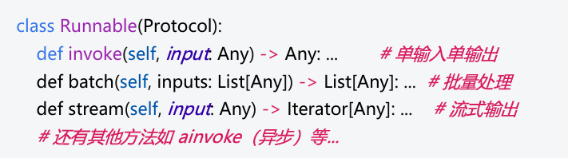
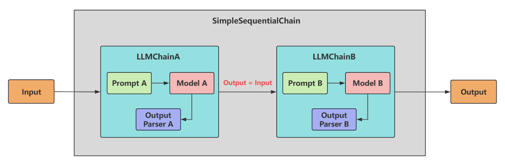
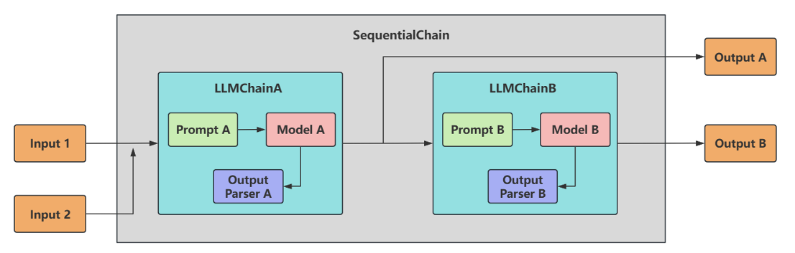
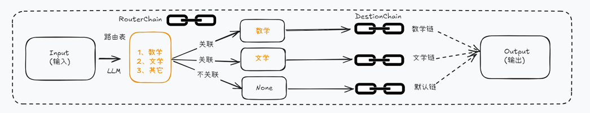
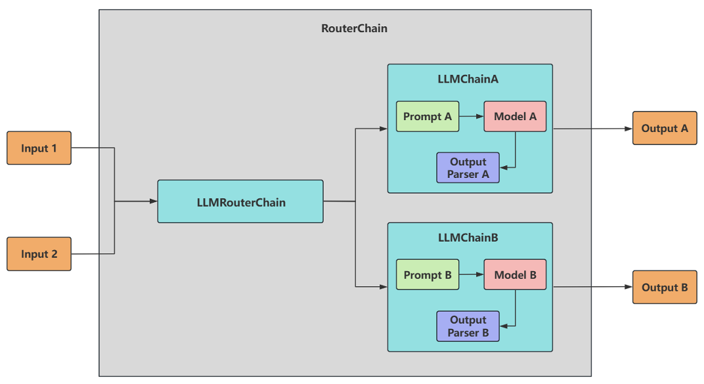

<!DOCTYPE html><html lang="zh-CN" data-theme="light"><head><meta charset="UTF-8"><meta http-equiv="X-UA-Compatible" content="IE=edge"><meta name="viewport" content="width=device-width, initial-scale=1.0,viewport-fit=cover"><title>LangChain使用之Chains | Yinjin Yao的博客</title><meta name="author" content="Yinjin Yao"><meta name="copyright" content="Yinjin Yao"><meta name="format-detection" content="telephone=no"><meta name="theme-color" content="#ffffff"><meta name="description" content="Chains的基本使用
 Chain的基本概念
 Chain：链，用于将多个组件（提示模板、LLM模型、记忆、工具等）连接起来，形成可复用的工作流，完成复杂的任务。
 Chain 的核心思想是通过组合不同的模块化单元，实现比单一组件更强大的功能。比如： - 将LLM与 Prompt Template （提示模板）结合 - 将LLM与 输出解析器结合 - 将LLM与 外部数据结合，例如用于问答 -">
<meta property="og:type" content="article">
<meta property="og:title" content="LangChain使用之Chains">
<meta property="og:url" content="https://cryingatnight.github.io/2025/10/13/LangChain%E4%BD%BF%E7%94%A8%E4%B9%8BChains/index.html">
<meta property="og:site_name" content="Yinjin Yao的博客">
<meta property="og:description" content="Chains的基本使用
 Chain的基本概念
 Chain：链，用于将多个组件（提示模板、LLM模型、记忆、工具等）连接起来，形成可复用的工作流，完成复杂的任务。
 Chain 的核心思想是通过组合不同的模块化单元，实现比单一组件更强大的功能。比如： - 将LLM与 Prompt Template （提示模板）结合 - 将LLM与 输出解析器结合 - 将LLM与 外部数据结合，例如用于问答 -">
<meta property="og:locale" content="zh_CN">
<meta property="og:image" content="https://cryingatnight.github.io/img/lita6.jpg">
<meta property="article:published_time" content="2025-10-13T04:00:00.000Z">
<meta property="article:modified_time" content="2025-10-13T02:07:32.000Z">
<meta property="article:author" content="Yinjin Yao">
<meta property="article:tag" content="LangChain">
<meta name="twitter:card" content="summary">
<meta name="twitter:image" content="https://cryingatnight.github.io/img/lita6.jpg"><script type="application/ld+json">{
  "@context": "https://schema.org",
  "@type": "BlogPosting",
  "headline": "LangChain使用之Chains",
  "url": "https://cryingatnight.github.io/2025/10/13/LangChain%E4%BD%BF%E7%94%A8%E4%B9%8BChains/",
  "image": "https://cryingatnight.github.io/img/lita6.jpg",
  "datePublished": "2025-10-13T04:00:00.000Z",
  "dateModified": "2025-10-13T02:07:32.000Z",
  "author": [
    {
      "@type": "Person",
      "name": "Yinjin Yao",
      "url": "https://cryingatnight.github.io"
    }
  ]
}</script><link rel="shortcut icon" href="/img/headimage.png"><link rel="canonical" href="https://cryingatnight.github.io/2025/10/13/LangChain%E4%BD%BF%E7%94%A8%E4%B9%8BChains/index.html"><link rel="preconnect" href="//cdn.jsdelivr.net"/><link rel="preconnect" href="//busuanzi.ibruce.info"/><link rel="stylesheet" href="/css/index.css"><link rel="stylesheet" href="https://cdn.jsdelivr.net/npm/@fortawesome/fontawesome-free/css/all.min.css"><script>
    (() => {
      
    const saveToLocal = {
      set: (key, value, ttl) => {
        if (!ttl) return
        const expiry = Date.now() + ttl * 86400000
        localStorage.setItem(key, JSON.stringify({ value, expiry }))
      },
      get: key => {
        const itemStr = localStorage.getItem(key)
        if (!itemStr) return undefined
        const { value, expiry } = JSON.parse(itemStr)
        if (Date.now() > expiry) {
          localStorage.removeItem(key)
          return undefined
        }
        return value
      }
    }

    window.btf = {
      saveToLocal,
      getScript: (url, attr = {}) => new Promise((resolve, reject) => {
        const script = document.createElement('script')
        script.src = url
        script.async = true
        Object.entries(attr).forEach(([key, val]) => script.setAttribute(key, val))
        script.onload = script.onreadystatechange = () => {
          if (!script.readyState || /loaded|complete/.test(script.readyState)) resolve()
        }
        script.onerror = reject
        document.head.appendChild(script)
      }),
      getCSS: (url, id) => new Promise((resolve, reject) => {
        const link = document.createElement('link')
        link.rel = 'stylesheet'
        link.href = url
        if (id) link.id = id
        link.onload = link.onreadystatechange = () => {
          if (!link.readyState || /loaded|complete/.test(link.readyState)) resolve()
        }
        link.onerror = reject
        document.head.appendChild(link)
      }),
      addGlobalFn: (key, fn, name = false, parent = window) => {
        if (!false && key.startsWith('pjax')) return
        const globalFn = parent.globalFn || {}
        globalFn[key] = globalFn[key] || {}
        globalFn[key][name || Object.keys(globalFn[key]).length] = fn
        parent.globalFn = globalFn
      }
    }
  
      
      const activateDarkMode = () => {
        document.documentElement.setAttribute('data-theme', 'dark')
        if (document.querySelector('meta[name="theme-color"]') !== null) {
          document.querySelector('meta[name="theme-color"]').setAttribute('content', '#0d0d0d')
        }
      }
      const activateLightMode = () => {
        document.documentElement.setAttribute('data-theme', 'light')
        if (document.querySelector('meta[name="theme-color"]') !== null) {
          document.querySelector('meta[name="theme-color"]').setAttribute('content', '#ffffff')
        }
      }

      btf.activateDarkMode = activateDarkMode
      btf.activateLightMode = activateLightMode

      const theme = saveToLocal.get('theme')
    
          const mediaQueryDark = window.matchMedia('(prefers-color-scheme: dark)')
          const mediaQueryLight = window.matchMedia('(prefers-color-scheme: light)')

          if (theme === undefined) {
            if (mediaQueryLight.matches) activateLightMode()
            else if (mediaQueryDark.matches) activateDarkMode()
            else {
              const hour = new Date().getHours()
              const isNight = hour <= 6 || hour >= 18
              isNight ? activateDarkMode() : activateLightMode()
            }
            mediaQueryDark.addEventListener('change', () => {
              if (saveToLocal.get('theme') === undefined) {
                e.matches ? activateDarkMode() : activateLightMode()
              }
            })
          } else {
            theme === 'light' ? activateLightMode() : activateDarkMode()
          }
        
      
      const asideStatus = saveToLocal.get('aside-status')
      if (asideStatus !== undefined) {
        document.documentElement.classList.toggle('hide-aside', asideStatus === 'hide')
      }
    
      
    const detectApple = () => {
      if (/iPad|iPhone|iPod|Macintosh/.test(navigator.userAgent)) {
        document.documentElement.classList.add('apple')
      }
    }
    detectApple()
  
    })()
  </script><script>const GLOBAL_CONFIG = {
  root: '/',
  algolia: undefined,
  localSearch: {"path":"/search.xml","preload":false,"top_n_per_article":1,"unescape":false,"languages":{"hits_empty":"未找到符合您查询的内容：${query}","hits_stats":"共找到 ${hits} 篇文章"}},
  translate: undefined,
  highlight: {"plugin":"highlight.js","highlightCopy":true,"highlightLang":true,"highlightHeightLimit":false,"highlightFullpage":false,"highlightMacStyle":false},
  copy: {
    success: '复制成功',
    error: '复制失败',
    noSupport: '浏览器不支持'
  },
  relativeDate: {
    homepage: false,
    post: false
  },
  runtime: '',
  dateSuffix: {
    just: '刚刚',
    min: '分钟前',
    hour: '小时前',
    day: '天前',
    month: '个月前'
  },
  copyright: undefined,
  lightbox: 'null',
  Snackbar: undefined,
  infinitegrid: {
    js: 'https://cdn.jsdelivr.net/npm/@egjs/infinitegrid/dist/infinitegrid.min.js',
    buttonText: '加载更多'
  },
  isPhotoFigcaption: false,
  islazyloadPlugin: false,
  isAnchor: false,
  percent: {
    toc: true,
    rightside: false,
  },
  autoDarkmode: true
}</script><script id="config-diff">var GLOBAL_CONFIG_SITE = {
  title: 'LangChain使用之Chains',
  isHighlightShrink: false,
  isToc: true,
  pageType: 'post'
}</script><!-- hexo injector head_end start -->
<link rel="stylesheet" href="https://cdn.jsdelivr.net/npm/katex@0.12.0/dist/katex.min.css">

<link rel="stylesheet" href="https://cdn.jsdelivr.net/npm/hexo-math@4.0.0/dist/style.css">
<!-- hexo injector head_end end --><meta name="generator" content="Hexo 7.3.0"></head><body><div id="sidebar"><div id="menu-mask"></div><div id="sidebar-menus"><div class="avatar-img text-center"></div><div class="site-data text-center"><a href="/archives/"><div class="headline">文章</div><div class="length-num">30</div></a><a href="/tags/"><div class="headline">标签</div><div class="length-num">27</div></a><a href="/categories/"><div class="headline">分类</div><div class="length-num">3</div></a></div><div class="menus_items"><div class="menus_item"><a class="site-page" href="/"><i class="fa-fw fas fa-home"></i><span> 首页</span></a></div><div class="menus_item"><span class="site-page group"><i class="fa-fw fas fa-book"></i><span> 文章</span><i class="fas fa-chevron-down"></i></span><ul class="menus_item_child"><li><a class="site-page child" href="/categories/"><i class="fa-fw fas fa-folder-open"></i><span> 分类</span></a></li><li><a class="site-page child" href="/tags/"><i class="fa-fw fas fa-tags"></i><span> 标签</span></a></li><li><a class="site-page child" href="/archives/"><i class="fa-fw fas fa-archive"></i><span> 归档</span></a></li></ul></div><div class="menus_item"><span class="site-page group"><i class="fa-fw fa-solid fa-flask"></i><span> 实验室</span><i class="fas fa-chevron-down"></i></span><ul class="menus_item_child"><li><a class="site-page child" target="_blank" rel="noopener" href="http://121.199.61.105/"><i class="fa-fw fas fa-q"></i><span> 豆瓣网开发</span></a></li><li><a class="site-page child" target="_blank" rel="noopener" href="https://fuckornot.on.websim.com/"><i class="fa-fw fa fa-trophy"></i><span> 上不上AI评分系统</span></a></li><li><a class="site-page child" target="_blank" rel="noopener" href="https://fontawesome.com/icons"><i class="fa-fw fa fa-check-circle"></i><span> font-awesome v6 图标</span></a></li></ul></div><div class="menus_item"><a class="site-page" href="/about/"><i class="fa-fw fas fa-heart"></i><span> 关于</span></a></div></div></div></div><div class="post" id="body-wrap"><header class="post-bg" id="page-header" style="background-image: url(/img/lita6.jpg);"><nav id="nav"><span id="blog-info"><a class="nav-site-title" href="/"><span class="site-name">Yinjin Yao的博客</span></a><a class="nav-page-title" href="/"><span class="site-name">LangChain使用之Chains</span><span class="site-name"><i class="fa-solid fa-circle-arrow-left"></i><span>  返回首页</span></span></a></span><div id="menus"><div id="search-button"><span class="site-page social-icon search"><i class="fas fa-search fa-fw"></i><span> 搜索</span></span></div><div class="menus_items"><div class="menus_item"><a class="site-page" href="/"><i class="fa-fw fas fa-home"></i><span> 首页</span></a></div><div class="menus_item"><span class="site-page group"><i class="fa-fw fas fa-book"></i><span> 文章</span><i class="fas fa-chevron-down"></i></span><ul class="menus_item_child"><li><a class="site-page child" href="/categories/"><i class="fa-fw fas fa-folder-open"></i><span> 分类</span></a></li><li><a class="site-page child" href="/tags/"><i class="fa-fw fas fa-tags"></i><span> 标签</span></a></li><li><a class="site-page child" href="/archives/"><i class="fa-fw fas fa-archive"></i><span> 归档</span></a></li></ul></div><div class="menus_item"><span class="site-page group"><i class="fa-fw fa-solid fa-flask"></i><span> 实验室</span><i class="fas fa-chevron-down"></i></span><ul class="menus_item_child"><li><a class="site-page child" target="_blank" rel="noopener" href="http://121.199.61.105/"><i class="fa-fw fas fa-q"></i><span> 豆瓣网开发</span></a></li><li><a class="site-page child" target="_blank" rel="noopener" href="https://fuckornot.on.websim.com/"><i class="fa-fw fa fa-trophy"></i><span> 上不上AI评分系统</span></a></li><li><a class="site-page child" target="_blank" rel="noopener" href="https://fontawesome.com/icons"><i class="fa-fw fa fa-check-circle"></i><span> font-awesome v6 图标</span></a></li></ul></div><div class="menus_item"><a class="site-page" href="/about/"><i class="fa-fw fas fa-heart"></i><span> 关于</span></a></div></div><div id="toggle-menu"><span class="site-page"><i class="fas fa-bars fa-fw"></i></span></div></div></nav><div id="post-info"><h1 class="post-title">LangChain使用之Chains</h1><div id="post-meta"><div class="meta-firstline"><span class="post-meta-date"><i class="far fa-calendar-alt fa-fw post-meta-icon"></i><span class="post-meta-label">发表于</span><time class="post-meta-date-created" datetime="2025-10-13T04:00:00.000Z" title="发表于 2025-10-13 12:00:00">2025-10-13</time><span class="post-meta-separator">|</span><i class="fas fa-history fa-fw post-meta-icon"></i><span class="post-meta-label">更新于</span><time class="post-meta-date-updated" datetime="2025-10-13T02:07:32.000Z" title="更新于 2025-10-13 10:07:32">2025-10-13</time></span><span class="post-meta-categories"><span class="post-meta-separator">|</span><i class="fas fa-inbox fa-fw post-meta-icon"></i><a class="post-meta-categories" href="/categories/%E7%AC%94%E8%AE%B0/">笔记</a></span></div><div class="meta-secondline"><span class="post-meta-separator">|</span><span class="post-meta-pv-cv" id="" data-flag-title=""><i class="far fa-eye fa-fw post-meta-icon"></i><span class="post-meta-label">浏览量:</span><span id="busuanzi_value_page_pv"><i class="fa-solid fa-spinner fa-spin"></i></span></span></div></div></div></header><main class="layout" id="content-inner"><div id="post"><article class="container post-content" id="article-container"><h1 id="chains的基本使用">Chains的基本使用</h1>
<h2 id="chain的基本概念">Chain的基本概念</h2>
<p>Chain：链，用于将多个组件（提示模板、LLM模型、记忆、工具等）连接起来，形成可复用的<strong>工作流</strong>，完成复杂的任务。</p>
<p><strong>Chain 的核心思想</strong>是通过组合不同的模块化单元，实现比单一组件更强大的功能。比如： - 将LLM与 Prompt Template （提示模板）结合 - 将LLM与 输出解析器结合 - 将LLM与 外部数据结合，例如用于问答 - 将LLM与 长期记忆结合，例如用于聊天历史记录 - 通过将 <strong>第一个LLM 的输出</strong>作为<strong>第二个LLM 的输入</strong>，…，将多个LLM按顺序结合在一起</p>
<h2 id="lcel-及其基本构成">LCEL 及其基本构成</h2>
<p>使用LCEL，可以构造出结构最简单的Chain。</p>
<p>LangChain表达式语言（LCEL，LangChain Expression Language）是一种声明式方法，可以轻松地 将多个组件链接成 AI 工作流。它通过Python原生操作符（如管道符|）将组件连接成可执行流程，显 著简化了AI应用的开发。</p>
<p><strong>LCEL的基本构成</strong>：提示（Prompt）+ 模型（Model）+ 输出解析器（OutputParser）</p>
<p>即： <figure class="highlight python"><table><tr><td class="gutter"><pre><span class="line">1</span><br><span class="line">2</span><br><span class="line">3</span><br></pre></td><td class="code"><pre><span class="line"><span class="comment"># 在这个链条中，用户输入被传递给提示模板，然后提示模板的输出被传递给模型，然后模型的输出被传 递给输出解析器。 </span></span><br><span class="line">chain = prompt | model | output_parser </span><br><span class="line">chain.invoke(&#123; <span class="string">&quot;input&quot;</span> : <span class="string">&quot;What&#x27;s your name?&quot;</span> &#125;)</span><br></pre></td></tr></table></figure></p>
<ul>
<li><strong>Prompt</strong>：Prompt 是一个 BasePromptTemplate，这意味着它接受一个模板变量的字典并生成一 个PromptValue 。PromptValue 可以传递给 LLM（它以字符串作为输入）或 ChatModel（它以 消息序列作为输入）。</li>
<li><strong>Model</strong>：将 PromptValue 传递给 model。如果我们的 model 是一个 ChatModel，这意味着它 将输出一个<code>BaseMessage</code>。</li>
<li><strong>OutputParser</strong>：将 model 的输出传递给 output_parser，它是一个 BaseOutputParser，意味着 它可以接受字符串或 BaseMessage 作为输入。</li>
<li><strong>chain</strong>：我们可以使用 <code>|</code> 运算符轻松创建这个Chain。<code>|</code> 运算符在 LangChain 中用于将两个 元素组合在一起。</li>
<li><strong>invoke</strong>：所有LCEL对象都实现了 Runnable 协议，保证一致的调用方式 （<code>invoke</code>/ <code>batch</code> / <code>stream</code> ）</li>
</ul>
<div class="line-block">符号类似于 shell ⾥⾯管道操作符，它将不同的组件链接在⼀起，将前⼀个组件的输出作为下⼀ 个组件的输⼊，这就形成了⼀个 AI ⼯作流。</div>
<h2 id="runnable">Runnable</h2>
<p>Runnable是LangChain定义的一个抽象接口（Protocol），它 <strong>强制要求</strong>所有LCEL组件实现一组标准方 法：  任何实现了这些方法的对象都被视为LCEL兼容组件。比如：聊天模型、提示词模板、输出解析器、检索 器、代理(智能体)等。 每个 LCEL 对象都实现了 Runnable 接口，该接口定义了一组公共的调用方法。这使得 LCEL 对象链也 自动支持这些调用成为可能。</p>
<p><strong>2、为什么需要统一调用方式？</strong></p>
<p>传统问题 假设没有统一协议： - 提示词渲染用 .format() - 模型调用用 .generate() - 解析器解析用 .parse() - 工具调用用 .run()</p>
<p>代码会变成： <figure class="highlight python"><table><tr><td class="gutter"><pre><span class="line">1</span><br><span class="line">2</span><br><span class="line">3</span><br></pre></td><td class="code"><pre><span class="line">prompt_text = prompt.<span class="built_in">format</span>(topic= <span class="string">&quot;猫&quot;</span> ) <span class="comment"># 方法1 </span></span><br><span class="line">model_out = model.generate(prompt_text) <span class="comment"># 方法2 </span></span><br><span class="line">result = parser.parse(model_out) <span class="comment"># 方法3</span></span><br></pre></td></tr></table></figure> <strong>痛点</strong>：每个组件调用方式不同，组合时需要手动适配。</p>
<p><strong>3、LCEL解决方案</strong> 通过 <strong>Runnable</strong> 协议统一： <figure class="highlight python"><table><tr><td class="gutter"><pre><span class="line">1</span><br><span class="line">2</span><br><span class="line">3</span><br><span class="line">4</span><br><span class="line">5</span><br><span class="line">6</span><br><span class="line">7</span><br><span class="line">8</span><br></pre></td><td class="code"><pre><span class="line"><span class="comment">#（分步调用） </span></span><br><span class="line">prompt_text = prompt.invoke(&#123; <span class="string">&quot;topic&quot;</span> : <span class="string">&quot;猫&quot;</span> &#125;) <span class="comment"># 方法1 </span></span><br><span class="line">model_out = model.invoke(prompt_text) <span class="comment"># 方法2 </span></span><br><span class="line">result = parser.invoke(model_out) <span class="comment"># 方法3 </span></span><br><span class="line"></span><br><span class="line"><span class="comment">#（LCEL管道式） </span></span><br><span class="line">chain = prompt | model | parser <span class="comment"># 用管道符组合 </span></span><br><span class="line">result = chain.invoke(&#123; <span class="string">&quot;topic&quot;</span> : <span class="string">&quot;猫&quot;</span> &#125;) <span class="comment"># 所有组件统一用invoke</span></span><br></pre></td></tr></table></figure></p>
<ul>
<li>一致性：无论组件的功能多复杂（模型/提示词/工具），调用方式完全相同</li>
<li>组合性：管道操作符 | 背后自动处理类型匹配和中间结果传递</li>
</ul>
<h2 id="使用举例">使用举例</h2>
<p>举例1： 情况1：没有使用chain <figure class="highlight python"><table><tr><td class="gutter"><pre><span class="line">1</span><br><span class="line">2</span><br><span class="line">3</span><br><span class="line">4</span><br><span class="line">5</span><br><span class="line">6</span><br><span class="line">7</span><br><span class="line">8</span><br><span class="line">9</span><br><span class="line">10</span><br><span class="line">11</span><br><span class="line">12</span><br><span class="line">13</span><br><span class="line">14</span><br><span class="line">15</span><br><span class="line">16</span><br><span class="line">17</span><br><span class="line">18</span><br><span class="line">19</span><br><span class="line">20</span><br><span class="line">21</span><br><span class="line">22</span><br><span class="line">23</span><br><span class="line">24</span><br><span class="line">25</span><br><span class="line">26</span><br><span class="line">27</span><br><span class="line">28</span><br><span class="line">29</span><br><span class="line">30</span><br><span class="line">31</span><br><span class="line">32</span><br></pre></td><td class="code"><pre><span class="line"><span class="comment"># 引入依赖包  </span></span><br><span class="line"><span class="keyword">from</span> langchain_core.output_parsers <span class="keyword">import</span> JsonOutputParser  </span><br><span class="line"><span class="keyword">from</span> langchain_core.prompts <span class="keyword">import</span> PromptTemplate  </span><br><span class="line"><span class="keyword">import</span> os  </span><br><span class="line"><span class="keyword">import</span> dotenv  </span><br><span class="line"><span class="keyword">from</span> langchain_openai <span class="keyword">import</span> ChatOpenAI  </span><br><span class="line">  </span><br><span class="line">dotenv.load_dotenv()  </span><br><span class="line">  </span><br><span class="line">os.environ[<span class="string">&#x27;OPENAI_API_KEY&#x27;</span>] = os.getenv(<span class="string">&quot;OPENAI_API_KEY1&quot;</span>)  </span><br><span class="line">os.environ[<span class="string">&#x27;OPENAI_BASE_URL&#x27;</span>] = os.getenv(<span class="string">&quot;OPENAI_BASE_URL&quot;</span>)  </span><br><span class="line">  </span><br><span class="line"><span class="comment"># 初始化语言模型  </span></span><br><span class="line">chat_model = ChatOpenAI(model=<span class="string">&quot;gpt-4o-mini&quot;</span>)  </span><br><span class="line">  </span><br><span class="line">joke_query = <span class="string">&quot;告诉我一个笑话。&quot;</span>  </span><br><span class="line">  </span><br><span class="line"><span class="comment"># 定义Json解析器  </span></span><br><span class="line">parser = JsonOutputParser()  </span><br><span class="line">  </span><br><span class="line"><span class="comment">#以PromptTemplate为例  </span></span><br><span class="line">prompt_template = PromptTemplate.from_template(  </span><br><span class="line">    template=<span class="string">&quot;回答用户的查询\n 满足的格式为&#123;format_instructions&#125;\n 问题为&#123;question&#125;\n&quot;</span>,  </span><br><span class="line">    partial_variables=&#123;<span class="string">&quot;format_instructions&quot;</span>: parser.get_format_instructions()&#125;,  </span><br><span class="line">)  </span><br><span class="line">  </span><br><span class="line">prompt = prompt_template.invoke(<span class="built_in">input</span>=&#123;<span class="string">&quot;question&quot;</span>: joke_query&#125;)  </span><br><span class="line">response = chat_model.invoke(prompt)  </span><br><span class="line"><span class="built_in">print</span>(response)  </span><br><span class="line">  </span><br><span class="line">json_result = parser.invoke(response)  </span><br><span class="line"><span class="built_in">print</span>(json_result)</span><br></pre></td></tr></table></figure> 结果： <figure class="highlight bash"><table><tr><td class="gutter"><pre><span class="line">1</span><br><span class="line">2</span><br></pre></td><td class="code"><pre><span class="line">content=<span class="string">&#x27;```json\n&#123;\n  &quot;joke&quot;: &quot;为什么海洋总是那么蓝？因为鱼儿们在水里总是哭！&quot;\n&#125;\n```&#x27;</span> additional_kwargs=&#123;<span class="string">&#x27;refusal&#x27;</span>: None&#125; response_metadata=&#123;<span class="string">&#x27;token_usage&#x27;</span>: &#123;<span class="string">&#x27;completion_tokens&#x27;</span>: 32, <span class="string">&#x27;prompt_tokens&#x27;</span>: 32, <span class="string">&#x27;total_tokens&#x27;</span>: 64, <span class="string">&#x27;completion_tokens_details&#x27;</span>: &#123;<span class="string">&#x27;accepted_prediction_tokens&#x27;</span>: 0, <span class="string">&#x27;audio_tokens&#x27;</span>: 0, <span class="string">&#x27;reasoning_tokens&#x27;</span>: 0, <span class="string">&#x27;rejected_prediction_tokens&#x27;</span>: 0&#125;, <span class="string">&#x27;prompt_tokens_details&#x27;</span>: &#123;<span class="string">&#x27;audio_tokens&#x27;</span>: 0, <span class="string">&#x27;cached_tokens&#x27;</span>: 0&#125;&#125;, <span class="string">&#x27;model_name&#x27;</span>: <span class="string">&#x27;gpt-4o-mini-2024-07-18&#x27;</span>, <span class="string">&#x27;system_fingerprint&#x27;</span>: <span class="string">&#x27;fp_efad92c60b&#x27;</span>, <span class="string">&#x27;id&#x27;</span>: <span class="string">&#x27;chatcmpl-CATaTzK9DXqSMbOaqYFiF7UAzlOwL&#x27;</span>, <span class="string">&#x27;service_tier&#x27;</span>: None, <span class="string">&#x27;finish_reason&#x27;</span>: <span class="string">&#x27;stop&#x27;</span>, <span class="string">&#x27;logprobs&#x27;</span>: None&#125; <span class="built_in">id</span>=<span class="string">&#x27;run--a05306ba-4a1e-420d-abe9-b9a45ee65b75-0&#x27;</span> usage_metadata=&#123;<span class="string">&#x27;input_tokens&#x27;</span>: 32, <span class="string">&#x27;output_tokens&#x27;</span>: 32, <span class="string">&#x27;total_tokens&#x27;</span>: 64, <span class="string">&#x27;input_token_details&#x27;</span>: &#123;<span class="string">&#x27;audio&#x27;</span>: 0, <span class="string">&#x27;cache_read&#x27;</span>: 0&#125;, <span class="string">&#x27;output_token_details&#x27;</span>: &#123;<span class="string">&#x27;audio&#x27;</span>: 0, <span class="string">&#x27;reasoning&#x27;</span>: 0&#125;&#125;</span><br><span class="line">&#123;<span class="string">&#x27;joke&#x27;</span>: <span class="string">&#x27;为什么海洋总是那么蓝？因为鱼儿们在水里总是哭！&#x27;</span>&#125;</span><br></pre></td></tr></table></figure></p>
<p>情况2：使用chain：将提示模板、模型、解析器链接在一起。使用LCEL将不同的组件组合成一个单一的 链条 <figure class="highlight python"><table><tr><td class="gutter"><pre><span class="line">1</span><br><span class="line">2</span><br><span class="line">3</span><br><span class="line">4</span><br><span class="line">5</span><br><span class="line">6</span><br><span class="line">7</span><br><span class="line">8</span><br><span class="line">9</span><br><span class="line">10</span><br><span class="line">11</span><br><span class="line">12</span><br><span class="line">13</span><br><span class="line">14</span><br><span class="line">15</span><br><span class="line">16</span><br><span class="line">17</span><br><span class="line">18</span><br><span class="line">19</span><br><span class="line">20</span><br><span class="line">21</span><br><span class="line">22</span><br><span class="line">23</span><br><span class="line">24</span><br><span class="line">25</span><br><span class="line">26</span><br><span class="line">27</span><br><span class="line">28</span><br><span class="line">29</span><br></pre></td><td class="code"><pre><span class="line"><span class="comment"># 引入依赖包  </span></span><br><span class="line"><span class="keyword">from</span> langchain_core.output_parsers <span class="keyword">import</span> JsonOutputParser  </span><br><span class="line"><span class="keyword">from</span> langchain_core.prompts <span class="keyword">import</span> PromptTemplate  </span><br><span class="line">  </span><br><span class="line"><span class="comment"># 初始化语言模型  </span></span><br><span class="line">chat_model = ChatOpenAI(model=<span class="string">&quot;gpt-4o-mini&quot;</span>)  </span><br><span class="line">  </span><br><span class="line">joke_query = <span class="string">&quot;告诉我一个笑话。&quot;</span>  </span><br><span class="line">  </span><br><span class="line"><span class="comment"># 定义Json解析器  </span></span><br><span class="line">parser = JsonOutputParser()  </span><br><span class="line">  </span><br><span class="line"><span class="comment">#以PromptTemplate为例  </span></span><br><span class="line">prompt_template = PromptTemplate.from_template(  </span><br><span class="line">    template=<span class="string">&quot;回答用户的查询\n 满足的格式为&#123;format_instructions&#125;\n 问题为&#123;question&#125;\n&quot;</span>,  </span><br><span class="line">    partial_variables=&#123;<span class="string">&quot;format_instructions&quot;</span>: parser.get_format_instructions()&#125;,  </span><br><span class="line">)  </span><br><span class="line"><span class="comment"># 写法1：  </span></span><br><span class="line"><span class="comment"># prompt = prompt_template.invoke(input=&#123;&quot;question&quot;:joke_query&#125;)  </span></span><br><span class="line"><span class="comment"># response = chat_model.invoke(prompt)  </span></span><br><span class="line"><span class="comment"># json_result = parser.invoke(response)  </span></span><br><span class="line">  </span><br><span class="line"><span class="comment"># 正确的写法  </span></span><br><span class="line">chain = prompt_template | chat_model | parser  </span><br><span class="line">  </span><br><span class="line"><span class="comment"># 错误的写法  </span></span><br><span class="line"><span class="comment"># chain =  chat_model |  prompt_template | parser  </span></span><br><span class="line">json_result = chain.invoke(<span class="built_in">input</span>=&#123;<span class="string">&quot;question&quot;</span>: joke_query&#125;)  </span><br><span class="line"><span class="built_in">print</span>(json_result)</span><br></pre></td></tr></table></figure> 结果： <figure class="highlight bash"><table><tr><td class="gutter"><pre><span class="line">1</span><br></pre></td><td class="code"><pre><span class="line">&#123;<span class="string">&#x27;joke&#x27;</span>: <span class="string">&#x27;为什么程序员总是混淆圣诞节和万圣节？因为 Oct 31 == Dec 25!&#x27;</span>&#125;</span><br></pre></td></tr></table></figure></p>
<h1 id="传统chain的使用">传统Chain的使用</h1>
<h2 id="基础链llmchain">基础链：LLMChain</h2>
<h3 id="使用说明">使用说明</h3>
<p>LCEL之前，最基础也最常见的链类型是LLMChain。 <strong>这个链至少包括一个提示词模板（PromptTemplate），一个语言模型（LLM 或聊天模型）。</strong></p>
<blockquote>
<p>[!notice] 注意：LLMChain was deprecated in LangChain 0.1.17 and will be removed in 1.0. Use <code>prompt | llm</code> instead。</p>
</blockquote>
<p>特点： - 用于 <strong>单次问答</strong>，输入一个 Prompt，输出 LLM 的响应。 - 适合 <strong>无上下文</strong> 的简单任务（如翻译、摘要、分类等）。 - <strong>无记忆</strong>：无法自动维护聊天历史</p>
<h3 id="主要步骤">主要步骤</h3>
<ol type="1">
<li><strong>配置任务链</strong>：使用LLMChain类将任务与提示词结合，形成完整的任务链。 <figure class="highlight python"><table><tr><td class="gutter"><pre><span class="line">1</span><br></pre></td><td class="code"><pre><span class="line">chain = LLMChain(llm = llm, prompt = prompt_template)</span><br></pre></td></tr></table></figure></li>
<li>执行任务链：使用invoke()等方法执行任务链，并获取生成结果。可以根据需要对输出进行处理和展 示。 <figure class="highlight python"><table><tr><td class="gutter"><pre><span class="line">1</span><br><span class="line">2</span><br></pre></td><td class="code"><pre><span class="line">result = chain.invoke(...) </span><br><span class="line"><span class="built_in">print</span> (result)</span><br></pre></td></tr></table></figure></li>
</ol>
<h3 id="参数说明">参数说明</h3>
<p>这里我们可以整理如下：</p>
<table>
<colgroup>
<col style="width: 7%" />
<col style="width: 37%" />
<col style="width: 2%" />
<col style="width: 1%" />
<col style="width: 51%" />
</colgroup>
<thead>
<tr class="header">
<th>参数名</th>
<th>类型</th>
<th>默认值</th>
<th>必填</th>
<th>说明</th>
</tr>
</thead>
<tbody>
<tr class="odd">
<td>llm</td>
<td>Union[Runnable[LanguageModelInput, str], Runnable[LanguageModelInput, BaseMessage]]</td>
<td>-</td>
<td>是</td>
<td>要调用的语言模型</td>
</tr>
<tr class="even">
<td><strong>prompt</strong></td>
<td>BasePromptTemplate</td>
<td>-</td>
<td>是</td>
<td>要使用的提示对象</td>
</tr>
<tr class="odd">
<td><strong>verbose</strong></td>
<td>bool</td>
<td>False</td>
<td>否</td>
<td><strong>是否以详细模式运行</strong>。在详细模式 下，一些中间日志将被打印到控制 台。默认使用全局详细设置，可通 过 langchain.globals.get_verbose() 访问</td>
</tr>
<tr class="even">
<td>callback_manager</td>
<td>Optional[BaseCallbackManager]</td>
<td>None</td>
<td>否</td>
<td>【已弃用】请改用callbacks。</td>
</tr>
<tr class="odd">
<td>callbacks</td>
<td>Callbacks</td>
<td>None</td>
<td>否</td>
<td>可选的回调处理器列表或回调管理 器。在调用链的生命周期中的不同 阶段被调用，从on_chain_start开 始，到on_chain_end或 on_chain_error结束。自定义链可 以选择调用额外的回调方法。详见 回调文档</td>
</tr>
<tr class="even">
<td>llm_kwargs</td>
<td>dict</td>
<td>-</td>
<td>否</td>
<td>语言模型的关键字参数字典</td>
</tr>
<tr class="odd">
<td><strong>memory</strong></td>
<td>Optional[BaseMemory]</td>
<td>None</td>
<td>否</td>
<td><strong>可选的记忆对象</strong>。默认为None。 记忆是一个在每个链的开始和结束 时被调用的类。开始时，记忆加载 变量并在链中传递。结束时，它保 存任何返回的变量。有许多不同类 型的内存，请查看内存文档获取完 整目录</td>
</tr>
<tr class="even">
<td>metadata</td>
<td>Optional[Dict[str, Any]]</td>
<td>None</td>
<td>否</td>
<td>与链相关联的可选元数据。默认为 None。这些元数据将与调用此链 的每次调用相关联，并作为参数传 递给callbacks中定义的处理程 序。您可以使用这些来识别链的特 定实例及其用例</td>
</tr>
<tr class="odd">
<td><strong>output_parser</strong></td>
<td>BaseLLMOutputParser</td>
<td>-</td>
<td>否</td>
<td><strong>要使用的输出解析器</strong>。默认为 StrOutputParser</td>
</tr>
<tr class="even">
<td>return_final_only</td>
<td>bool</td>
<td>True</td>
<td>否</td>
<td>是否只返回最终解析结果。默认为 True。如果为False，将返回关于 生成的额外信息。</td>
</tr>
<tr class="odd">
<td>tags</td>
<td>Optional[List[str]]</td>
<td>None</td>
<td>否</td>
<td>与链相关联的可选标签列表。默认 为None。这些标签将与调用此链 的每次调用相关联，并作为参数传 递给callbacks中定义的处理程 序。您可以使用这些来识别链的特 定实例及其用例</td>
</tr>
</tbody>
</table>
<p>举例1： <figure class="highlight python"><table><tr><td class="gutter"><pre><span class="line">1</span><br><span class="line">2</span><br><span class="line">3</span><br><span class="line">4</span><br><span class="line">5</span><br><span class="line">6</span><br><span class="line">7</span><br><span class="line">8</span><br><span class="line">9</span><br><span class="line">10</span><br><span class="line">11</span><br><span class="line">12</span><br><span class="line">13</span><br><span class="line">14</span><br><span class="line">15</span><br><span class="line">16</span><br><span class="line">17</span><br><span class="line">18</span><br><span class="line">19</span><br><span class="line">20</span><br><span class="line">21</span><br><span class="line">22</span><br><span class="line">23</span><br><span class="line">24</span><br><span class="line">25</span><br><span class="line">26</span><br><span class="line">27</span><br></pre></td><td class="code"><pre><span class="line"><span class="keyword">from</span> modulefinder <span class="keyword">import</span> replacePackageMap  </span><br><span class="line">  </span><br><span class="line"><span class="keyword">from</span> langchain.chains.llm <span class="keyword">import</span> LLMChain  </span><br><span class="line"><span class="keyword">from</span> langchain.chains.sequential <span class="keyword">import</span> SimpleSequentialChain  </span><br><span class="line"><span class="keyword">from</span> langchain_core.prompts <span class="keyword">import</span> PromptTemplate  </span><br><span class="line">  </span><br><span class="line"><span class="keyword">import</span> os  </span><br><span class="line"><span class="keyword">import</span> dotenv  </span><br><span class="line"><span class="keyword">from</span> langchain_openai <span class="keyword">import</span> ChatOpenAI  </span><br><span class="line">  </span><br><span class="line">dotenv.load_dotenv()  </span><br><span class="line">  </span><br><span class="line">os.environ[<span class="string">&#x27;OPENAI_API_KEY&#x27;</span>] = os.getenv(<span class="string">&quot;OPENAI_API_KEY1&quot;</span>)  </span><br><span class="line">os.environ[<span class="string">&#x27;OPENAI_BASE_URL&#x27;</span>] = os.getenv(<span class="string">&quot;OPENAI_BASE_URL&quot;</span>)  </span><br><span class="line">  </span><br><span class="line"><span class="comment"># 1、创建大模型实例  </span></span><br><span class="line">chat_model = ChatOpenAI(model=<span class="string">&quot;gpt-4o-mini&quot;</span>)  </span><br><span class="line">  </span><br><span class="line"><span class="comment"># 2、提供提示词模板  </span></span><br><span class="line"><span class="comment"># BasePromptTemplate的典型子类有：PrompTemplate、ChatPromptTemplate  </span></span><br><span class="line">prompt_template = PromptTemplate.from_template(  </span><br><span class="line">    template=<span class="string">&quot;你是一个数学高手，帮我解决如下的数学问题：&#123;question&#125;&quot;</span>  </span><br><span class="line">)  </span><br><span class="line">  </span><br><span class="line">chain = LLMChain(llm=chat_model, prompt=prompt_template, )  </span><br><span class="line">response = chain.invoke(<span class="built_in">input</span>=&#123;<span class="string">&quot;question&quot;</span>: <span class="string">&quot;1 + 2 * 3 = ?&quot;</span>&#125;)  </span><br><span class="line"><span class="built_in">print</span>(response)</span><br></pre></td></tr></table></figure> 结果： <figure class="highlight python"><table><tr><td class="gutter"><pre><span class="line">1</span><br></pre></td><td class="code"><pre><span class="line">&#123;<span class="string">&#x27;question&#x27;</span>: <span class="string">&#x27;1 + 2 * 3 = ?&#x27;</span>, <span class="string">&#x27;text&#x27;</span>: <span class="string">&#x27;根据数学运算的优先级，我们首先要进行乘法运算，然后再进行加法运算。\n\n所以，计算过程如下：\n\n1 + 2 * 3 = 1 + 6 = 7\n\n因此，1 + 2 * 3 = 7。&#x27;</span>&#125;</span><br></pre></td></tr></table></figure></p>
<p>举例2：使用ChatPromptTemplate及参数verbose的演示 <figure class="highlight python"><table><tr><td class="gutter"><pre><span class="line">1</span><br><span class="line">2</span><br><span class="line">3</span><br><span class="line">4</span><br><span class="line">5</span><br><span class="line">6</span><br><span class="line">7</span><br><span class="line">8</span><br><span class="line">9</span><br><span class="line">10</span><br><span class="line">11</span><br><span class="line">12</span><br><span class="line">13</span><br><span class="line">14</span><br><span class="line">15</span><br><span class="line">16</span><br><span class="line">17</span><br><span class="line">18</span><br><span class="line">19</span><br><span class="line">20</span><br><span class="line">21</span><br><span class="line">22</span><br><span class="line">23</span><br><span class="line">24</span><br><span class="line">25</span><br><span class="line">26</span><br><span class="line">27</span><br><span class="line">28</span><br><span class="line">29</span><br><span class="line">30</span><br></pre></td><td class="code"><pre><span class="line"><span class="keyword">from</span> langchain.chains.llm <span class="keyword">import</span> LLMChain  </span><br><span class="line"><span class="keyword">from</span> langchain_core.prompts <span class="keyword">import</span> PromptTemplate, ChatPromptTemplate  </span><br><span class="line">  </span><br><span class="line"><span class="keyword">import</span> os  </span><br><span class="line"><span class="keyword">import</span> dotenv  </span><br><span class="line"><span class="keyword">from</span> langchain_openai <span class="keyword">import</span> ChatOpenAI  </span><br><span class="line">  </span><br><span class="line">dotenv.load_dotenv()  </span><br><span class="line">  </span><br><span class="line">os.environ[<span class="string">&#x27;OPENAI_API_KEY&#x27;</span>] = os.getenv(<span class="string">&quot;OPENAI_API_KEY1&quot;</span>)  </span><br><span class="line">os.environ[<span class="string">&#x27;OPENAI_BASE_URL&#x27;</span>] = os.getenv(<span class="string">&quot;OPENAI_BASE_URL&quot;</span>)  </span><br><span class="line">  </span><br><span class="line"><span class="comment"># 1、创建大模型实例  </span></span><br><span class="line">chat_model = ChatOpenAI(model=<span class="string">&quot;gpt-4o-mini&quot;</span>)  </span><br><span class="line">  </span><br><span class="line"><span class="comment"># 2、提供提示词模板  </span></span><br><span class="line"><span class="comment"># BasePromptTemplate的典型子类有：PrompTemplate、ChatPromptTemplate  </span></span><br><span class="line">prompt_template = ChatPromptTemplate.from_messages([  </span><br><span class="line">    (<span class="string">&quot;system&quot;</span>, <span class="string">&quot;你是一个数学高手&quot;</span>),  </span><br><span class="line">    (<span class="string">&quot;human&quot;</span>, <span class="string">&quot;帮我解决如下的数学问题：&#123;question&#125;&quot;</span>)  </span><br><span class="line">  </span><br><span class="line">])  </span><br><span class="line">  </span><br><span class="line">chain = LLMChain(  </span><br><span class="line">    llm=chat_model,  </span><br><span class="line">    prompt=prompt_template,  </span><br><span class="line">    verbose=<span class="literal">True</span>,  <span class="comment">#显式执行过程中的详细日志情况  </span></span><br><span class="line">)  </span><br><span class="line">response = chain.invoke(<span class="built_in">input</span>=&#123;<span class="string">&quot;question&quot;</span>: <span class="string">&quot;1 + 2 * 3 = ?&quot;</span>&#125;)  </span><br><span class="line"><span class="built_in">print</span>(response)</span><br></pre></td></tr></table></figure> 结果： <figure class="highlight bash"><table><tr><td class="gutter"><pre><span class="line">1</span><br><span class="line">2</span><br><span class="line">3</span><br><span class="line">4</span><br><span class="line">5</span><br><span class="line">6</span><br><span class="line">7</span><br><span class="line">8</span><br></pre></td><td class="code"><pre><span class="line">&gt; Entering new LLMChain chain...</span><br><span class="line">Prompt after formatting:</span><br><span class="line">System: 你是一个数学高手</span><br><span class="line">Human: 帮我解决如下的数学问题：1 + 2 * 3 = ?</span><br><span class="line"></span><br><span class="line">&gt; Finished chain.</span><br><span class="line">&#123;<span class="string">&#x27;question&#x27;</span>: <span class="string">&#x27;1 + 2 * 3 = ?&#x27;</span>, <span class="string">&#x27;text&#x27;</span>: <span class="string">&#x27;根据数学运算的优先级，先进行乘法再进行加法。因此我们先计算 \\( 2 * 3 \\)，得到 \\( 6 \\)。然后再进行加法：\n\n\\[ \n1 + 6 = 7 \n\\]\n\n所以 \\( 1 + 2 * 3 = 7 \\)。&#x27;</span>&#125;</span><br><span class="line"></span><br></pre></td></tr></table></figure></p>
<p>补充说明：调用方法除了invoke()外，还有run()、predict()、实例方法等，效果与invoke()相同，这里 不再介绍。 ## 顺序链之 SimpleSequentialChain</p>
<p>顺序链（SequentialChain）允许将多个链顺序连接起来，每个Chain的输出作为下一个Chain的输入， 形成特定场景的流水线（Pipeline）。</p>
<p><strong>顺序链有两种类型</strong>： - 单个输入/输出：对应着 SimpleSequentialChain - 多个输入/输出：对应着：SequentialChain</p>
<h3 id="说明">说明</h3>
<p>SimpleSequentialChain：最简单的顺序链，多个链 串联执行 ，每个步骤都有 单一的输入和输出，一 个步骤的输出就是下一个步骤的输入，无需手动映射 </p>
<h3 id="使用举例-1">使用举例</h3>
<p>举例1： <figure class="highlight python"><table><tr><td class="gutter"><pre><span class="line">1</span><br><span class="line">2</span><br><span class="line">3</span><br><span class="line">4</span><br><span class="line">5</span><br><span class="line">6</span><br><span class="line">7</span><br><span class="line">8</span><br><span class="line">9</span><br><span class="line">10</span><br><span class="line">11</span><br><span class="line">12</span><br><span class="line">13</span><br><span class="line">14</span><br><span class="line">15</span><br><span class="line">16</span><br><span class="line">17</span><br><span class="line">18</span><br><span class="line">19</span><br><span class="line">20</span><br></pre></td><td class="code"><pre><span class="line"><span class="keyword">from</span> langchain_core.prompts <span class="keyword">import</span> ChatPromptTemplate  </span><br><span class="line"><span class="keyword">from</span> langchain.chains <span class="keyword">import</span> LLMChain  </span><br><span class="line">  </span><br><span class="line">chainA_template = ChatPromptTemplate.from_messages(  </span><br><span class="line">    [  </span><br><span class="line">        (<span class="string">&quot;system&quot;</span>, <span class="string">&quot;你是一位精通各领域知识的知名教授&quot;</span>),  </span><br><span class="line">        (<span class="string">&quot;human&quot;</span>, <span class="string">&quot;请你尽可能详细的解释一下：&#123;knowledge&#125;&quot;</span>),  </span><br><span class="line">    ]  </span><br><span class="line">)  </span><br><span class="line">  </span><br><span class="line">chat_model = ChatOpenAI(model=<span class="string">&quot;gpt-4o-mini&quot;</span>)  </span><br><span class="line">  </span><br><span class="line">chainA_chains = LLMChain(llm=chat_model,  </span><br><span class="line">                         prompt=chainA_template,  </span><br><span class="line">                         verbose=<span class="literal">True</span>  </span><br><span class="line">                         )  </span><br><span class="line">  </span><br><span class="line">  </span><br><span class="line">  </span><br><span class="line"><span class="comment"># chainA_chains.invoke(&#123;&quot;knowledge&quot;:&quot;什么是LangChain？&quot;&#125;)</span></span><br></pre></td></tr></table></figure></p>
<p>继续： <figure class="highlight python"><table><tr><td class="gutter"><pre><span class="line">1</span><br><span class="line">2</span><br><span class="line">3</span><br><span class="line">4</span><br><span class="line">5</span><br><span class="line">6</span><br><span class="line">7</span><br><span class="line">8</span><br><span class="line">9</span><br><span class="line">10</span><br><span class="line">11</span><br><span class="line">12</span><br><span class="line">13</span><br><span class="line">14</span><br></pre></td><td class="code"><pre><span class="line"><span class="keyword">from</span> langchain_core.prompts <span class="keyword">import</span> ChatPromptTemplate  </span><br><span class="line">  </span><br><span class="line">chainB_template = ChatPromptTemplate.from_messages(  </span><br><span class="line">    [  </span><br><span class="line">        (<span class="string">&quot;system&quot;</span>, <span class="string">&quot;你非常善于提取文本中的重要信息，并做出简短的总结&quot;</span>),  </span><br><span class="line">        (<span class="string">&quot;human&quot;</span>, <span class="string">&quot;这是针对一个提问的完整的解释说明内容：&#123;description&#125;&quot;</span>),  </span><br><span class="line">        (<span class="string">&quot;human&quot;</span>, <span class="string">&quot;请你根据上述说明，尽可能简短的输出重要的结论，请控制在20个字以内&quot;</span>),  </span><br><span class="line">    ]  </span><br><span class="line">)  </span><br><span class="line">  </span><br><span class="line">chainB_chains = LLMChain(llm=chat_model,  </span><br><span class="line">                         prompt=chainB_template,  </span><br><span class="line">                         verbose=<span class="literal">True</span>  </span><br><span class="line">                         )</span><br></pre></td></tr></table></figure></p>
<figure class="highlight python"><table><tr><td class="gutter"><pre><span class="line">1</span><br><span class="line">2</span><br><span class="line">3</span><br><span class="line">4</span><br><span class="line">5</span><br><span class="line">6</span><br><span class="line">7</span><br><span class="line">8</span><br><span class="line">9</span><br><span class="line">10</span><br></pre></td><td class="code"><pre><span class="line"><span class="keyword">from</span> langchain.chains.sequential <span class="keyword">import</span> SimpleSequentialChain  </span><br><span class="line">  </span><br><span class="line">full_chain = SimpleSequentialChain(  </span><br><span class="line">    chains=[chainA_chains, chainB_chains],  </span><br><span class="line">    verbose=<span class="literal">True</span>  </span><br><span class="line">)  </span><br><span class="line">  </span><br><span class="line"><span class="comment">#说明：针对于SimpleSequentialChain而言，唯一的输入的变量名是：input  </span></span><br><span class="line">response = full_chain.invoke(<span class="built_in">input</span>=&#123;<span class="string">&quot;input&quot;</span>: <span class="string">&quot;什么是LangChain?&quot;</span>&#125;)  </span><br><span class="line"><span class="built_in">print</span>(response)</span><br></pre></td></tr></table></figure>
<p>结果： <figure class="highlight bash"><table><tr><td class="gutter"><pre><span class="line">1</span><br><span class="line">2</span><br><span class="line">3</span><br><span class="line">4</span><br><span class="line">5</span><br><span class="line">6</span><br><span class="line">7</span><br><span class="line">8</span><br><span class="line">9</span><br><span class="line">10</span><br><span class="line">11</span><br><span class="line">12</span><br><span class="line">13</span><br><span class="line">14</span><br><span class="line">15</span><br><span class="line">16</span><br><span class="line">17</span><br><span class="line">18</span><br><span class="line">19</span><br><span class="line">20</span><br><span class="line">21</span><br><span class="line">22</span><br><span class="line">23</span><br><span class="line">24</span><br><span class="line">25</span><br><span class="line">26</span><br><span class="line">27</span><br><span class="line">28</span><br><span class="line">29</span><br><span class="line">30</span><br><span class="line">31</span><br><span class="line">32</span><br><span class="line">33</span><br><span class="line">34</span><br><span class="line">35</span><br><span class="line">36</span><br><span class="line">37</span><br><span class="line">38</span><br><span class="line">39</span><br><span class="line">40</span><br><span class="line">41</span><br><span class="line">42</span><br><span class="line">43</span><br><span class="line">44</span><br><span class="line">45</span><br><span class="line">46</span><br><span class="line">47</span><br><span class="line">48</span><br><span class="line">49</span><br><span class="line">50</span><br><span class="line">51</span><br><span class="line">52</span><br><span class="line">53</span><br><span class="line">54</span><br><span class="line">55</span><br><span class="line">56</span><br><span class="line">57</span><br><span class="line">58</span><br><span class="line">59</span><br><span class="line">60</span><br><span class="line">61</span><br><span class="line">62</span><br><span class="line">63</span><br><span class="line">64</span><br><span class="line">65</span><br><span class="line">66</span><br><span class="line">67</span><br><span class="line">68</span><br><span class="line">69</span><br><span class="line">70</span><br><span class="line">71</span><br><span class="line">72</span><br><span class="line">73</span><br><span class="line">74</span><br><span class="line">75</span><br><span class="line">76</span><br><span class="line">77</span><br><span class="line">78</span><br><span class="line">79</span><br><span class="line">80</span><br><span class="line">81</span><br><span class="line">82</span><br><span class="line">83</span><br><span class="line">84</span><br><span class="line">85</span><br><span class="line">86</span><br><span class="line">87</span><br><span class="line">88</span><br><span class="line">89</span><br><span class="line">90</span><br><span class="line">91</span><br><span class="line">92</span><br><span class="line">93</span><br><span class="line">94</span><br><span class="line">95</span><br><span class="line">96</span><br><span class="line">97</span><br><span class="line">98</span><br></pre></td><td class="code"><pre><span class="line"></span><br><span class="line"></span><br><span class="line">&gt; Entering new SimpleSequentialChain chain...</span><br><span class="line"></span><br><span class="line"></span><br><span class="line">&gt; Entering new LLMChain chain...</span><br><span class="line">Prompt after formatting:</span><br><span class="line">System: 你是一位精通各领域知识的知名教授</span><br><span class="line">Human: 请你尽可能详细的解释一下：什么是LangChain?</span><br><span class="line"></span><br><span class="line">&gt; Finished chain.</span><br><span class="line">LangChain 是一个开源的框架，旨在帮助开发者构建基于大语言模型（LLM, Large Language Models）和其他 AI 组件的应用程序。LangChain 的设计初衷是通过提供丰富的工具和结构，简化与语言模型的整合和应用开发过程，让开发者能够更高效地构建复杂的 NLP（自然语言处理）应用。</span><br><span class="line"></span><br><span class="line"><span class="comment">### LangChain 的核心概念</span></span><br><span class="line"></span><br><span class="line">1. **链（Chains）**：</span><br><span class="line">   LangChain 的核心概念是“链”，即将一个或多个操作或组件组合在一起，按顺序执行。每个链可以是简单的，也可以是复杂的，允许开发者定义输入和输出的关系。链可以包括查询、转换、验证等多个步骤。</span><br><span class="line"></span><br><span class="line">2. **代理（Agents）**：</span><br><span class="line">   代理是一种可动态决定其行为和路径的结构，它使用一个语言模型来理解用户输入，并选择最合适的行动。代理通常在需要实时决策的场景下使用，比如与用户的对话。</span><br><span class="line"></span><br><span class="line">3. **内存（Memory）**：</span><br><span class="line">   LangChain 提供了内存管理功能，允许应用在不同的会话中保留用户的上下文和历史信息。这样可以使得对话系统能够更好地理解用户的需求和偏好。</span><br><span class="line"></span><br><span class="line">4. **工具（Tools）**：</span><br><span class="line">   LangChain 支持将外部工具和 API 集成到链或代理中，使得语言模型能够进行逻辑推理、查询数据库、调用 web 服务等、并处理更复杂的任务。</span><br><span class="line"></span><br><span class="line">5. **文档（Documents）**：</span><br><span class="line">   文档处理是 LangChain 另一个重要功能。在需要处理大量文本信息的场景下，LangChain 提供了文档检索和分析的能力，以支持信息提取、总结等任务。</span><br><span class="line"></span><br><span class="line"><span class="comment">### LangChain 的使用场景</span></span><br><span class="line"></span><br><span class="line">LangChain 可以用于多种应用场景，包括但不限于：</span><br><span class="line"></span><br><span class="line">- **聊天机器人**：通过构建链和代理，开发者可以创建能够与用户进行自然交互的对话系统。</span><br><span class="line">- **内容生成**：LangChain 可以帮助自动生成文章、报告、诗歌等，特别是在需要多步生成的复杂内容时。</span><br><span class="line">- **数据分析**：结合 LLM 的推理能力，LangChain 能够支持复杂的数据查询和分析任务。</span><br><span class="line">- **教育工具**：通过智能助手，LangChain 可以支持个性化的学习和辅导体验。</span><br><span class="line"></span><br><span class="line"><span class="comment">### LangChain 的优势</span></span><br><span class="line"></span><br><span class="line">- **模块化**：LangChain 的模块化设计使得开发者可以根据需要选择和组合不同的组件，灵活性高。</span><br><span class="line">- **开源**：作为一个开源项目，LangChain 有强大的社区支持，开发者可以自由地使用和改进代码。</span><br><span class="line">- **集成能力**：能方便地与其他各种工具和平台集成，扩展了应用的功能和适用范围。</span><br><span class="line"></span><br><span class="line"><span class="comment">### 结论</span></span><br><span class="line"></span><br><span class="line">LangChain 是一个强大的工具，能够帮助开发者充分利用大语言模型的能力，构建复杂且智能的应用程序。通过灵活的链、代理、内存和工具设计，LangChain 使得自然语言处理应用的开发更加高效和便捷。无论是用于商业应用、教育工具，还是个人项目，LangChain 都为开发者提供了丰富的可能性。</span><br><span class="line"></span><br><span class="line"></span><br><span class="line">&gt; Entering new LLMChain chain...</span><br><span class="line">Prompt after formatting:</span><br><span class="line">System: 你非常善于提取文本中的重要信息，并做出简短的总结</span><br><span class="line">Human: 这是针对一个提问的完整的解释说明内容：LangChain 是一个开源的框架，旨在帮助开发者构建基于大语言模型（LLM, Large Language Models）和其他 AI 组件的应用程序。LangChain 的设计初衷是通过提供丰富的工具和结构，简化与语言模型的整合和应用开发过程，让开发者能够更高效地构建复杂的 NLP（自然语言处理）应用。</span><br><span class="line"></span><br><span class="line"><span class="comment">### LangChain 的核心概念</span></span><br><span class="line"></span><br><span class="line">1. **链（Chains）**：</span><br><span class="line">   LangChain 的核心概念是“链”，即将一个或多个操作或组件组合在一起，按顺序执行。每个链可以是简单的，也可以是复杂的，允许开发者定义输入和输出的关系。链可以包括查询、转换、验证等多个步骤。</span><br><span class="line"></span><br><span class="line">2. **代理（Agents）**：</span><br><span class="line">   代理是一种可动态决定其行为和路径的结构，它使用一个语言模型来理解用户输入，并选择最合适的行动。代理通常在需要实时决策的场景下使用，比如与用户的对话。</span><br><span class="line"></span><br><span class="line">3. **内存（Memory）**：</span><br><span class="line">   LangChain 提供了内存管理功能，允许应用在不同的会话中保留用户的上下文和历史信息。这样可以使得对话系统能够更好地理解用户的需求和偏好。</span><br><span class="line"></span><br><span class="line">4. **工具（Tools）**：</span><br><span class="line">   LangChain 支持将外部工具和 API 集成到链或代理中，使得语言模型能够进行逻辑推理、查询数据库、调用 web 服务等、并处理更复杂的任务。</span><br><span class="line"></span><br><span class="line">5. **文档（Documents）**：</span><br><span class="line">   文档处理是 LangChain 另一个重要功能。在需要处理大量文本信息的场景下，LangChain 提供了文档检索和分析的能力，以支持信息提取、总结等任务。</span><br><span class="line"></span><br><span class="line"><span class="comment">### LangChain 的使用场景</span></span><br><span class="line"></span><br><span class="line">LangChain 可以用于多种应用场景，包括但不限于：</span><br><span class="line"></span><br><span class="line">- **聊天机器人**：通过构建链和代理，开发者可以创建能够与用户进行自然交互的对话系统。</span><br><span class="line">- **内容生成**：LangChain 可以帮助自动生成文章、报告、诗歌等，特别是在需要多步生成的复杂内容时。</span><br><span class="line">- **数据分析**：结合 LLM 的推理能力，LangChain 能够支持复杂的数据查询和分析任务。</span><br><span class="line">- **教育工具**：通过智能助手，LangChain 可以支持个性化的学习和辅导体验。</span><br><span class="line"></span><br><span class="line"><span class="comment">### LangChain 的优势</span></span><br><span class="line"></span><br><span class="line">- **模块化**：LangChain 的模块化设计使得开发者可以根据需要选择和组合不同的组件，灵活性高。</span><br><span class="line">- **开源**：作为一个开源项目，LangChain 有强大的社区支持，开发者可以自由地使用和改进代码。</span><br><span class="line">- **集成能力**：能方便地与其他各种工具和平台集成，扩展了应用的功能和适用范围。</span><br><span class="line"></span><br><span class="line"><span class="comment">### 结论</span></span><br><span class="line"></span><br><span class="line">LangChain 是一个强大的工具，能够帮助开发者充分利用大语言模型的能力，构建复杂且智能的应用程序。通过灵活的链、代理、内存和工具设计，LangChain 使得自然语言处理应用的开发更加高效和便捷。无论是用于商业应用、教育工具，还是个人项目，LangChain 都为开发者提供了丰富的可能性。</span><br><span class="line">Human: 请你根据上述说明，尽可能简短的输出重要的结论，请控制在20个字以内</span><br><span class="line"></span><br><span class="line">&gt; Finished chain.</span><br><span class="line">LangChain 简化了大语言模型应用开发，支持灵活的模块组合与集成。</span><br><span class="line"></span><br><span class="line">&gt; Finished chain.</span><br><span class="line">&#123;<span class="string">&#x27;input&#x27;</span>: <span class="string">&#x27;什么是LangChain?&#x27;</span>, <span class="string">&#x27;output&#x27;</span>: <span class="string">&#x27;LangChain 简化了大语言模型应用开发，支持灵活的模块组合与集成。&#x27;</span>&#125;</span><br><span class="line"></span><br></pre></td></tr></table></figure></p>
<p>在这个过程中，因为SimpleSequentialChain定义的是顺序链，所以在chains参数中传递的列表要按照 顺序来进行传入，即LLMChain A 要在LLMChain B之前。同时，在调用时，不再使用LLMChain A中定 义的{knowledge} 参数，也不是LLMChainB中定义的{description}参数，而是要使用 input进行变 量的传递。</p>
<p>举例2 <figure class="highlight python"><table><tr><td class="gutter"><pre><span class="line">1</span><br><span class="line">2</span><br><span class="line">3</span><br><span class="line">4</span><br><span class="line">5</span><br><span class="line">6</span><br><span class="line">7</span><br><span class="line">8</span><br><span class="line">9</span><br><span class="line">10</span><br><span class="line">11</span><br><span class="line">12</span><br><span class="line">13</span><br><span class="line">14</span><br><span class="line">15</span><br><span class="line">16</span><br><span class="line">17</span><br><span class="line">18</span><br><span class="line">19</span><br><span class="line">20</span><br><span class="line">21</span><br><span class="line">22</span><br><span class="line">23</span><br><span class="line">24</span><br><span class="line">25</span><br><span class="line">26</span><br><span class="line">27</span><br><span class="line">28</span><br><span class="line">29</span><br><span class="line">30</span><br><span class="line">31</span><br><span class="line">32</span><br><span class="line">33</span><br><span class="line">34</span><br><span class="line">35</span><br></pre></td><td class="code"><pre><span class="line"><span class="comment"># 1.导入相关包  </span></span><br><span class="line"><span class="keyword">from</span> langchain.chains <span class="keyword">import</span> LLMChain  </span><br><span class="line"><span class="keyword">from</span> langchain_core.prompts <span class="keyword">import</span> PromptTemplate  </span><br><span class="line"><span class="keyword">from</span> langchain.chains <span class="keyword">import</span> SimpleSequentialChain  </span><br><span class="line">  </span><br><span class="line"><span class="comment"># 2.创建大模型实例  </span></span><br><span class="line">llm = ChatOpenAI(model=<span class="string">&quot;gpt-4o-mini&quot;</span>)  </span><br><span class="line">  </span><br><span class="line"><span class="comment"># 3.定义一个给剧名写大纲的LLMChain  </span></span><br><span class="line">template1 = <span class="string">&quot;&quot;&quot;你是个剧作家。给定剧本的标题，你的工作就是为这个标题写一个大纲。  </span></span><br><span class="line"><span class="string">Title: &#123;title&#125;  </span></span><br><span class="line"><span class="string">&quot;&quot;&quot;</span>  </span><br><span class="line">prompt_template1 = PromptTemplate(input_variables=[<span class="string">&quot;title&quot;</span>], template=template1)  </span><br><span class="line">synopsis_chain = LLMChain(llm=llm, prompt=prompt_template1)  </span><br><span class="line">  </span><br><span class="line"><span class="comment"># 4.定义给一个剧本大纲写一篇评论的LLMChain  </span></span><br><span class="line">template2 = <span class="string">&quot;&quot;&quot;你是《纽约时报》的剧评家。有了剧本的大纲，你的工作就是为剧本写一篇评论  </span></span><br><span class="line"><span class="string">剧情大纲:  </span></span><br><span class="line"><span class="string">&#123;synopsis&#125;  </span></span><br><span class="line"><span class="string">&quot;&quot;&quot;</span>  </span><br><span class="line">prompt_template2 = PromptTemplate(input_variables=[<span class="string">&quot;synopsis&quot;</span>], template=template2)  </span><br><span class="line">review_chain = LLMChain(llm=llm, prompt=prompt_template2)  </span><br><span class="line">  </span><br><span class="line">  </span><br><span class="line"><span class="comment"># 5.定义一个完整的链按顺序运行这两条链  </span></span><br><span class="line"><span class="comment">#(verbose=True:打印链的执行过程)  </span></span><br><span class="line">overall_chain = SimpleSequentialChain(  </span><br><span class="line">    chains=[synopsis_chain, review_chain],  </span><br><span class="line">    verbose=<span class="literal">True</span>  </span><br><span class="line">)  </span><br><span class="line"><span class="comment"># 6.调用完整链顺序执行这两个链  </span></span><br><span class="line">review = overall_chain.invoke(&#123;<span class="string">&quot;input&quot;</span>:<span class="string">&quot;日落海滩上的悲剧&quot;</span>&#125;)  </span><br><span class="line">  </span><br><span class="line"><span class="comment"># 7.打印结果  </span></span><br><span class="line"><span class="built_in">print</span>(review)</span><br></pre></td></tr></table></figure> 结果： <figure class="highlight bash"><table><tr><td class="gutter"><pre><span class="line">1</span><br><span class="line">2</span><br><span class="line">3</span><br><span class="line">4</span><br><span class="line">5</span><br><span class="line">6</span><br><span class="line">7</span><br><span class="line">8</span><br><span class="line">9</span><br><span class="line">10</span><br><span class="line">11</span><br><span class="line">12</span><br><span class="line">13</span><br><span class="line">14</span><br><span class="line">15</span><br><span class="line">16</span><br><span class="line">17</span><br><span class="line">18</span><br><span class="line">19</span><br><span class="line">20</span><br><span class="line">21</span><br><span class="line">22</span><br><span class="line">23</span><br><span class="line">24</span><br><span class="line">25</span><br><span class="line">26</span><br><span class="line">27</span><br><span class="line">28</span><br><span class="line">29</span><br><span class="line">30</span><br><span class="line">31</span><br><span class="line">32</span><br><span class="line">33</span><br><span class="line">34</span><br><span class="line">35</span><br><span class="line">36</span><br><span class="line">37</span><br><span class="line">38</span><br><span class="line">39</span><br><span class="line">40</span><br><span class="line">41</span><br><span class="line">42</span><br><span class="line">43</span><br><span class="line">44</span><br><span class="line">45</span><br><span class="line">46</span><br><span class="line">47</span><br><span class="line">48</span><br></pre></td><td class="code"><pre><span class="line"></span><br><span class="line"></span><br><span class="line">&gt; Entering new SimpleSequentialChain chain...</span><br><span class="line">标题: 日落海滩上的悲剧</span><br><span class="line"></span><br><span class="line">大纲:</span><br><span class="line"></span><br><span class="line">**第一幕：初见与冲突**</span><br><span class="line">- 场景设定在一个风景如画的海滩小镇，黄昏时分，阳光洒在波浪上，营造出宁静的氛围。</span><br><span class="line">- 主要角色介绍：艾米莉（年轻的艺术家），她正在海滩上寻求灵感；杰克（早年回乡的海军军人），内心承受着战争的创伤；老渔夫哈罗德（镇上的智者，为人和蔼却满腹辛酸）。</span><br><span class="line">- 艾米莉偶然遇见杰克，两人因对海滩的不同看法而产生争执。杰克认为战争是人类无法逃避的悲剧，而艾米莉则认为艺术能治愈创伤。</span><br><span class="line"></span><br><span class="line">**第二幕：友谊与秘密**</span><br><span class="line">- 在一次海滩晚会中，艾米莉和杰克逐渐和解并成为朋友。在哈罗德的引导下，他们分享各自的经历，建立起深厚的情感纽带。</span><br><span class="line">- 艾米莉对杰克的过去产生了浓厚的兴趣并尝试用画笔捕捉他的故事，然而，杰克对战争的回忆仍然充满痛苦，他试图隐藏自己内心的黑暗。</span><br><span class="line">- 镇上发生了一件神秘的事情：一位年轻女孩在海滩失踪，镇子陷入恐慌，杰克的内心冲突加剧。</span><br><span class="line"></span><br><span class="line">**第三幕：真相揭示与选择**</span><br><span class="line">- 艾米莉和杰克决定展开调查，试图找出女孩失踪的真相。在这个过程中，他们发现了小镇隐藏的秘密，揭示了人们对于过去的逃避以及对现实的无力。</span><br><span class="line">- 在一次深夜探险中，艾米莉在海滩发现了旧日战争留下的遗物，勾起了杰克痛苦的记忆，最终他在海滩上爆发出情绪，揭示了自己在战争中亲历的悲惨事件。</span><br><span class="line">- 二人面对各自的伤痛，杰克决定向镇上人们讲述真相，而艾米莉则决定用艺术记录下他们的故事。</span><br><span class="line"></span><br><span class="line">**第四幕：悲剧与救赎**</span><br><span class="line">- 当杰克表白自己的经历后，镇上的人们被震撼，部分人开始意识到直面过去的重要性。</span><br><span class="line">- 然而，就在大家逐渐适应这个真相时，新的悲剧发生：杰克因无法承受内心的重负而选择极端方式结束自己的生命。艾米莉在此刻感受到深深的绝望与悔恨。</span><br><span class="line">- 最终，在杰克的葬礼上，艾米莉发表演讲，向小镇的居民呼吁珍惜生命与彼此，她决定以画作纪念杰克，把他的故事传递下去。</span><br><span class="line"></span><br><span class="line">**结尾：希望与重生**</span><br><span class="line">- 画展上的艾米莉将杰克的故事以艺术的形式展现出来，吸引了越来越多人的关注。</span><br><span class="line">- 海滩夕阳再次落下，艾米莉站在海滩上，手中握着画笔，她意识到，虽然生命充满悲剧，但每个人的故事都有被听见的价值，同时也渴望着希望与救赎。</span><br><span class="line">**剧评：《日落海滩上的悲剧》——在艺术与痛苦之间的抉择**</span><br><span class="line"></span><br><span class="line">《日落海滩上的悲剧》是一部充满情感深度的戏剧，通过精致的角色塑造与引人入胜的剧情，为观众展现了人性中的脆弱与坚韧。导演以海滩小镇的宁静为背景，配合黄昏的温暖色调，形成了鲜明的对比，揭示了角色内心的冲突与挣扎。</span><br><span class="line"></span><br><span class="line">剧情的第一幕，初见与冲突，展示了艾米莉与杰克之间的对立。在这个片段中，艾米莉暗示了艺术的治疗力量，而杰克的坚定态度则传达出战争无法被遗忘的深刻痛苦。这种对比不仅设置了两人之间的主要矛盾，也让观众感受到人类情感的复杂性。杰克的内心创伤与艾米莉的理想主义形成了尖锐的冲突，为后续互动埋下了丰富的情感基础。</span><br><span class="line"></span><br><span class="line">随着剧情的深入，友谊与秘密的第二幕描绘了艾米莉与杰克的关系演变。两人逐步打破了心理上的壁垒，成为彼此倾诉的对象。此时，老渔夫哈罗德的角色显得愈发重要，他不仅是智慧的象征，更是连接过去与现在的桥梁。他们共享故事的时刻，如同温暖的潮水，渐渐冲淡了各自的孤独与伤痛。然而，故事的转折点在于女孩的失踪，这一突发事件再次将杰克推入情感的深渊，揭示了镇上人们面对真实的逃避与无力感。</span><br><span class="line"></span><br><span class="line">剧作的中心在于真相揭示与选择的第三幕，艾米莉和杰克调查女孩失踪的真相，这不仅是对外界事件的一次探索，更是对内心秘密的呼唤。杰克的情感爆发，深情又痛苦，展示了他内心深处的黑暗与矛盾。而艾米莉的角色在此刻显得无比重要，她选择用画笔记录下这一切，不仅是对杰克的救赎，也是对自己内心的解放。</span><br><span class="line"></span><br><span class="line">剧中的悲剧并非仅限于杰克的选择，而是对人类共同痛苦的深刻反思。杰克的自杀是对内心冲突的无声抗议，令观众对生命的脆弱与珍贵感慨万千。而艾米莉则成为折射希望的光芒，她以画作为杰克赋予了生命的意义，使悲剧变成了一次团结与共鸣的呼唤。</span><br><span class="line"></span><br><span class="line">结尾的画展是对整个故事的升华，艾米莉用艺术冲破了哀痛的枷锁，将杰克的故事传递给了更多的人。海滩上的夕阳，不仅象征着生命的轮回，更传递出一种希望的气息。她在绝望与希望之间寻找到了自己的位置，向观众展示了艺术如何让痛苦成为一种力量。</span><br><span class="line"></span><br><span class="line">《日落海滩上的悲剧》是一部深情并富有思考的作品，挑战着观众对生命意义的理解。它不仅探讨了战争带来的创伤，也透视了生活中的悲剧与救赎。是艺术让人们重新审视过去，直面痛苦，并从中寻找希望。每一个故事都值得被聆听，每一个生命都渴望得到珍视。</span><br><span class="line"></span><br><span class="line">&gt; Finished chain.</span><br><span class="line">&#123;<span class="string">&#x27;input&#x27;</span>: <span class="string">&#x27;日落海滩上的悲剧&#x27;</span>, <span class="string">&#x27;output&#x27;</span>: <span class="string">&#x27;**剧评：《日落海滩上的悲剧》——在艺术与痛苦之间的抉择**\n\n《日落海滩上的悲剧》是一部充满情感深度的戏剧，通过精致的角色塑造与引人入胜的剧情，为观众展现了人性中的脆弱与坚韧。导演以海滩小镇的宁静为背景，配合黄昏的温暖色调，形成了鲜明的对比，揭示了角色内心的冲突与挣扎。\n\n剧情的第一幕，初见与冲突，展示了艾米莉与杰克之间的对立。在这个片段中，艾米莉暗示了艺术的治疗力量，而杰克的坚定态度则传达出战争无法被遗忘的深刻痛苦。这种对比不仅设置了两人之间的主要矛盾，也让观众感受到人类情感的复杂性。杰克的内心创伤与艾米莉的理想主义形成了尖锐的冲突，为后续互动埋下了丰富的情感基础。\n\n随着剧情的深入，友谊与秘密的第二幕描绘了艾米莉与杰克的关系演变。两人逐步打破了心理上的壁垒，成为彼此倾诉的对象。此时，老渔夫哈罗德的角色显得愈发重要，他不仅是智慧的象征，更是连接过去与现在的桥梁。他们共享故事的时刻，如同温暖的潮水，渐渐冲淡了各自的孤独与伤痛。然而，故事的转折点在于女孩的失踪，这一突发事件再次将杰克推入情感的深渊，揭示了镇上人们面对真实的逃避与无力感。\n\n剧作的中心在于真相揭示与选择的第三幕，艾米莉和杰克调查女孩失踪的真相，这不仅是对外界事件的一次探索，更是对内心秘密的呼唤。杰克的情感爆发，深情又痛苦，展示了他内心深处的黑暗与矛盾。而艾米莉的角色在此刻显得无比重要，她选择用画笔记录下这一切，不仅是对杰克的救赎，也是对自己内心的解放。\n\n剧中的悲剧并非仅限于杰克的选择，而是对人类共同痛苦的深刻反思。杰克的自杀是对内心冲突的无声抗议，令观众对生命的脆弱与珍贵感慨万千。而艾米莉则成为折射希望的光芒，她以画作为杰克赋予了生命的意义，使悲剧变成了一次团结与共鸣的呼唤。\n\n结尾的画展是对整个故事的升华，艾米莉用艺术冲破了哀痛的枷锁，将杰克的故事传递给了更多的人。海滩上的夕阳，不仅象征着生命的轮回，更传递出一种希望的气息。她在绝望与希望之间寻找到了自己的位置，向观众展示了艺术如何让痛苦成为一种力量。\n\n《日落海滩上的悲剧》是一部深情并富有思考的作品，挑战着观众对生命意义的理解。它不仅探讨了战争带来的创伤，也透视了生活中的悲剧与救赎。是艺术让人们重新审视过去，直面痛苦，并从中寻找希望。每一个故事都值得被聆听，每一个生命都渴望得到珍视。&#x27;</span>&#125;</span><br></pre></td></tr></table></figure></p>
<h2 id="顺序链之-sequentialchain">顺序链之 SequentialChain</h2>
<h3 id="说明-1">说明</h3>
<p>SequentialChain：更通用的顺序链，具体来说： - 多变量支持：允许不同子链有独立的输入/输出变量。 - 灵活映射：需 显式定义变量如何从一个链传递到下一个链。即精准地命名输入关键字和输出关键 字，来明确链之间的关系。 - 复杂流程控制：支持分支、条件逻辑（分别通过<strong>input_variables</strong>和<strong>output_variables</strong>输出）。</p>
<p></p>
<h3 id="使用举例-2">使用举例</h3>
<p>举例1： <figure class="highlight python"><table><tr><td class="gutter"><pre><span class="line">1</span><br><span class="line">2</span><br><span class="line">3</span><br><span class="line">4</span><br><span class="line">5</span><br><span class="line">6</span><br><span class="line">7</span><br><span class="line">8</span><br><span class="line">9</span><br><span class="line">10</span><br><span class="line">11</span><br><span class="line">12</span><br><span class="line">13</span><br><span class="line">14</span><br><span class="line">15</span><br><span class="line">16</span><br><span class="line">17</span><br><span class="line">18</span><br><span class="line">19</span><br><span class="line">20</span><br><span class="line">21</span><br><span class="line">22</span><br><span class="line">23</span><br><span class="line">24</span><br><span class="line">25</span><br><span class="line">26</span><br><span class="line">27</span><br><span class="line">28</span><br><span class="line">29</span><br><span class="line">30</span><br><span class="line">31</span><br><span class="line">32</span><br><span class="line">33</span><br><span class="line">34</span><br><span class="line">35</span><br><span class="line">36</span><br><span class="line">37</span><br><span class="line">38</span><br><span class="line">39</span><br><span class="line">40</span><br><span class="line">41</span><br><span class="line">42</span><br><span class="line">43</span><br><span class="line">44</span><br><span class="line">45</span><br><span class="line">46</span><br><span class="line">47</span><br><span class="line">48</span><br><span class="line">49</span><br><span class="line">50</span><br><span class="line">51</span><br><span class="line">52</span><br><span class="line">53</span><br><span class="line">54</span><br><span class="line">55</span><br><span class="line">56</span><br><span class="line">57</span><br><span class="line">58</span><br></pre></td><td class="code"><pre><span class="line"><span class="keyword">from</span> langchain_core.prompts <span class="keyword">import</span> ChatPromptTemplate  </span><br><span class="line"><span class="keyword">from</span> langchain.chains <span class="keyword">import</span> SequentialChain  </span><br><span class="line"><span class="keyword">from</span> langchain_openai <span class="keyword">import</span> ChatOpenAI  </span><br><span class="line"><span class="keyword">from</span> langchain.chains <span class="keyword">import</span> LLMChain  </span><br><span class="line"><span class="keyword">from</span> openai <span class="keyword">import</span> OpenAI  </span><br><span class="line"><span class="keyword">import</span> os  </span><br><span class="line">  </span><br><span class="line"><span class="comment"># 创建大模型实例  </span></span><br><span class="line">llm = ChatOpenAI(model=<span class="string">&quot;gpt-4o-mini&quot;</span>)  </span><br><span class="line">  </span><br><span class="line">  </span><br><span class="line">schainA_template = ChatPromptTemplate.from_messages(  </span><br><span class="line">    [  </span><br><span class="line">        (<span class="string">&quot;system&quot;</span>, <span class="string">&quot;你是一位精通各领域知识的知名教授&quot;</span>),  </span><br><span class="line">        (<span class="string">&quot;human&quot;</span>, <span class="string">&quot;请你先尽可能详细的解释一下：&#123;knowledge&#125;，并且&#123;action&#125;&quot;</span>)  </span><br><span class="line">    ]  </span><br><span class="line">)  </span><br><span class="line">  </span><br><span class="line">schainA_chains = LLMChain(llm=llm,  </span><br><span class="line">                          prompt=schainA_template,  </span><br><span class="line">                          verbose=<span class="literal">True</span>,  </span><br><span class="line">                          output_key=<span class="string">&quot;schainA_chains_key&quot;</span>  </span><br><span class="line">                          )  </span><br><span class="line">  </span><br><span class="line"><span class="comment"># schainA_chains.invoke(&#123;  </span></span><br><span class="line"><span class="comment">#     &quot;knowledge&quot;: &quot;中国的篮球怎么样？&quot;,  </span></span><br><span class="line"><span class="comment">#     &quot;action&quot;: &quot;举一个实际的例子&quot;  </span></span><br><span class="line"><span class="comment"># &#125;  </span></span><br><span class="line"><span class="comment"># )  </span></span><br><span class="line">  </span><br><span class="line">schainB_template = ChatPromptTemplate.from_messages(  </span><br><span class="line">    [  </span><br><span class="line">        (<span class="string">&quot;system&quot;</span>, <span class="string">&quot;你非常善于提取文本中的重要信息，并做出简短的总结&quot;</span>),  </span><br><span class="line">        (<span class="string">&quot;human&quot;</span>, <span class="string">&quot;这是针对一个提问完整的解释说明内容：&#123;schainA_chains_key&#125;&quot;</span>),  </span><br><span class="line">        (<span class="string">&quot;human&quot;</span>, <span class="string">&quot;请你根据上述说明，尽可能简短的输出重要的结论，请控制在100个字以内&quot;</span>),  </span><br><span class="line">    ]  </span><br><span class="line">)  </span><br><span class="line">  </span><br><span class="line">schainB_chains = LLMChain(llm=llm,  </span><br><span class="line">                         prompt=schainB_template,  </span><br><span class="line">                         verbose=<span class="literal">True</span>,  </span><br><span class="line">                         output_key=<span class="string">&#x27;schainB_chains_key&#x27;</span>  </span><br><span class="line">                        )  </span><br><span class="line">  </span><br><span class="line"><span class="comment"># 一定要声明出两个变量：input_variables、output_variables  </span></span><br><span class="line">Seq_chain = SequentialChain(  </span><br><span class="line">                            chains=[schainA_chains, schainB_chains],  </span><br><span class="line">                            input_variables=[<span class="string">&quot;knowledge&quot;</span>, <span class="string">&quot;action&quot;</span>],  </span><br><span class="line">                            output_variables=[<span class="string">&quot;schainA_chains_key&quot;</span>,<span class="string">&quot;schainB_chains_key&quot;</span>],  </span><br><span class="line">                            verbose=<span class="literal">True</span>)  </span><br><span class="line">  </span><br><span class="line">response = Seq_chain.invoke(&#123;  </span><br><span class="line">                       <span class="string">&quot;knowledge&quot;</span>:<span class="string">&quot;中国足球为什么踢得烂&quot;</span>,  </span><br><span class="line">                       <span class="string">&quot;action&quot;</span>:<span class="string">&quot;举一个实际的例子&quot;</span>  </span><br><span class="line">                    &#125;  </span><br><span class="line">                )  </span><br><span class="line">  </span><br><span class="line"><span class="built_in">print</span>(response)</span><br></pre></td></tr></table></figure> 结果： <figure class="highlight bash"><table><tr><td class="gutter"><pre><span class="line">1</span><br><span class="line">2</span><br><span class="line">3</span><br><span class="line">4</span><br><span class="line">5</span><br><span class="line">6</span><br><span class="line">7</span><br><span class="line">8</span><br><span class="line">9</span><br><span class="line">10</span><br><span class="line">11</span><br><span class="line">12</span><br><span class="line">13</span><br><span class="line">14</span><br><span class="line">15</span><br><span class="line">16</span><br><span class="line">17</span><br><span class="line">18</span><br><span class="line">19</span><br><span class="line">20</span><br><span class="line">21</span><br><span class="line">22</span><br><span class="line">23</span><br><span class="line">24</span><br><span class="line">25</span><br><span class="line">26</span><br><span class="line">27</span><br><span class="line">28</span><br><span class="line">29</span><br><span class="line">30</span><br><span class="line">31</span><br><span class="line">32</span><br><span class="line">33</span><br><span class="line">34</span><br><span class="line">35</span><br><span class="line">36</span><br><span class="line">37</span><br><span class="line">38</span><br><span class="line">39</span><br><span class="line">40</span><br><span class="line">41</span><br><span class="line">42</span><br><span class="line">43</span><br><span class="line">44</span><br><span class="line">45</span><br><span class="line">46</span><br><span class="line">47</span><br><span class="line">48</span><br></pre></td><td class="code"><pre><span class="line"></span><br><span class="line"></span><br><span class="line">&gt; Entering new SequentialChain chain...</span><br><span class="line"></span><br><span class="line"></span><br><span class="line">&gt; Entering new LLMChain chain...</span><br><span class="line">Prompt after formatting:</span><br><span class="line">System: 你是一位精通各领域知识的知名教授</span><br><span class="line">Human: 请你先尽可能详细的解释一下：中国足球为什么踢得烂，并且举一个实际的例子</span><br><span class="line"></span><br><span class="line">&gt; Finished chain.</span><br><span class="line"></span><br><span class="line"></span><br><span class="line">&gt; Entering new LLMChain chain...</span><br><span class="line">Prompt after formatting:</span><br><span class="line">System: 你非常善于提取文本中的重要信息，并做出简短的总结</span><br><span class="line">Human: 这是针对一个提问完整的解释说明内容：中国足球之所以在国际舞台上表现不佳，原因复杂且多方面，主要可以从以下几个方面进行分析：</span><br><span class="line"></span><br><span class="line"><span class="comment">### 1. **体制与管理问题**</span></span><br><span class="line">   - **行政干预**：中国足球的管理体制存在较多行政干预，导致俱乐部和球队的发展受到限制。足球协会的决策往往受到政府部门的影响，缺乏独立性和专业性。</span><br><span class="line">   - **腐败现象**：历史上，中国足球曾暴露出不少腐败问题，包括假球和贿赂，损害了运动员的职业道德和观众的信任。</span><br><span class="line"></span><br><span class="line"><span class="comment">### 2. **青训体系不完善**</span></span><br><span class="line">   - **基础设施不足**：尽管近年来中国在足球场地建设上投入较多，但青训体系和基础设施的建设仍然滞后于其他足球强国。</span><br><span class="line">   - **青少年培养**：在青少年足球领域，缺乏系统的培训和选拔机制，优秀的青少年球员难以脱颖而出并得到良好的培养。</span><br><span class="line"></span><br><span class="line"><span class="comment">### 3. **专业化水平欠缺**</span></span><br><span class="line">   - **教练水平**：虽然一些外籍教练加入了中超联赛，但整体而言，中国本土教练的专业水平和战术素养较低，无法有效提升球队的战斗力。</span><br><span class="line">   - **运动员素质**：由于缺乏高水平的比赛经验和科学的训练方法，中国足球运动员在技术、战术理解和身体素质等方面相对薄弱。</span><br><span class="line"></span><br><span class="line"><span class="comment">### 4. **文化与氛围**</span></span><br><span class="line">   - **足球文化缺失**：在中国，足球文化相对薄弱，缺乏对足球的深厚热爱和支持，球迷基础较为薄弱，职业联赛的氛围不如一些足球强国。</span><br><span class="line">   - **社会压力**：踢足球往往被视为不务正业，家长和社会对运动员的期望集中在学业和职业安全，导致年轻人对足球的追求不足。</span><br><span class="line"></span><br><span class="line"><span class="comment">### 5. **球员流动性与联赛质量**</span></span><br><span class="line">   - **外援政策**：中超联赛吸引了大量外援，虽然提高了联赛的短期竞争力，但也导致本土球员缺乏锻炼和时间，限制了他们的发展。这样的环境使得年轻球员难以在国际比赛中脱颖而出。</span><br><span class="line"></span><br><span class="line"><span class="comment">### 实际例子：2018年世界杯预选赛</span></span><br><span class="line">在2018年世界杯预选赛中，中国队表现不佳，未能进入最终的世界杯决赛圈。即使在亚洲范围内，中国队与其他国家队相比，在技术、战术和比赛经验方面都显得不足。具体来说，在与亚洲对手的交锋中，频繁出现战术执行不到位和个人错误，最终导致小组赛早早出局。这个赛事不仅反映了中国足球的短期困境，更揭示了其背后扎根的系统性问题。</span><br><span class="line"></span><br><span class="line">综上所述，中国足球的表现并非单一因素造成，而是由多种深层次的问题叠加所致。解决这些问题需要全方位的改革和长期的投入。</span><br><span class="line">Human: 请你根据上述说明，尽可能简短的输出重要的结论，请控制在100个字以内</span><br><span class="line"></span><br><span class="line">&gt; Finished chain.</span><br><span class="line"></span><br><span class="line">&gt; Finished chain.</span><br><span class="line">&#123;<span class="string">&#x27;knowledge&#x27;</span>: <span class="string">&#x27;中国足球为什么踢得烂&#x27;</span>, <span class="string">&#x27;action&#x27;</span>: <span class="string">&#x27;举一个实际的例子&#x27;</span>, <span class="string">&#x27;schainB_chains_key&#x27;</span>: <span class="string">&#x27;中国足球表现不佳的主要原因包括体制与管理问题、青训体系不完善、专业化水平欠缺、足球文化缺失及联赛质量低下。历史上的腐败、缺乏独立的管理、以及社会对足球的偏见，导致年轻球员发展不足。要改善现状，需要全方位的改革和长期投入。&#x27;</span>&#125;</span><br><span class="line"></span><br></pre></td></tr></table></figure></p>
<p>还可以单独输出： <figure class="highlight python"><table><tr><td class="gutter"><pre><span class="line">1</span><br><span class="line">2</span><br><span class="line">3</span><br></pre></td><td class="code"><pre><span class="line"><span class="built_in">print</span> (response[ <span class="string">&quot;schainA_chains_key&quot;</span> ]) </span><br><span class="line"></span><br><span class="line"><span class="built_in">print</span> (response[ <span class="string">&quot;schainB_chains_key&quot;</span> ])</span><br></pre></td></tr></table></figure></p>
<p>举例2： <figure class="highlight python"><table><tr><td class="gutter"><pre><span class="line">1</span><br><span class="line">2</span><br><span class="line">3</span><br><span class="line">4</span><br><span class="line">5</span><br><span class="line">6</span><br><span class="line">7</span><br><span class="line">8</span><br><span class="line">9</span><br><span class="line">10</span><br><span class="line">11</span><br><span class="line">12</span><br><span class="line">13</span><br><span class="line">14</span><br><span class="line">15</span><br><span class="line">16</span><br><span class="line">17</span><br><span class="line">18</span><br><span class="line">19</span><br><span class="line">20</span><br><span class="line">21</span><br><span class="line">22</span><br><span class="line">23</span><br><span class="line">24</span><br><span class="line">25</span><br><span class="line">26</span><br><span class="line">27</span><br><span class="line">28</span><br><span class="line">29</span><br><span class="line">30</span><br><span class="line">31</span><br><span class="line">32</span><br><span class="line">33</span><br><span class="line">34</span><br><span class="line">35</span><br><span class="line">36</span><br><span class="line">37</span><br><span class="line">38</span><br><span class="line">39</span><br><span class="line">40</span><br><span class="line">41</span><br><span class="line">42</span><br><span class="line">43</span><br><span class="line">44</span><br><span class="line">45</span><br><span class="line">46</span><br><span class="line">47</span><br><span class="line">48</span><br><span class="line">49</span><br><span class="line">50</span><br><span class="line">51</span><br><span class="line">52</span><br><span class="line">53</span><br><span class="line">54</span><br><span class="line">55</span><br><span class="line">56</span><br><span class="line">57</span><br><span class="line">58</span><br><span class="line">59</span><br><span class="line">60</span><br><span class="line">61</span><br><span class="line">62</span><br><span class="line">63</span><br><span class="line">64</span><br><span class="line">65</span><br></pre></td><td class="code"><pre><span class="line"><span class="comment"># 1.导入相关包  </span></span><br><span class="line"><span class="keyword">from</span> langchain.chains.llm <span class="keyword">import</span> LLMChain  </span><br><span class="line"><span class="keyword">from</span> langchain_openai <span class="keyword">import</span> ChatOpenAI  </span><br><span class="line"><span class="keyword">from</span> langchain_core.prompts <span class="keyword">import</span> PromptTemplate  </span><br><span class="line"><span class="keyword">from</span> langchain.chains <span class="keyword">import</span> SequentialChain  </span><br><span class="line">  </span><br><span class="line"><span class="comment"># 创建大模型实例  </span></span><br><span class="line">llm = ChatOpenAI(model=<span class="string">&quot;gpt-4o-mini&quot;</span>)  </span><br><span class="line">  </span><br><span class="line"><span class="comment"># 2.定义任务链一  </span></span><br><span class="line"><span class="comment">#chain 1 任务：翻译成中文  </span></span><br><span class="line">first_prompt = PromptTemplate.from_template(<span class="string">&quot;把下面内容翻译成中文:\n\n&#123;content&#125;&quot;</span>)  </span><br><span class="line">chain_one = LLMChain(  </span><br><span class="line">    llm=llm,  </span><br><span class="line">    prompt=first_prompt,  </span><br><span class="line">    verbose=<span class="literal">True</span>,  </span><br><span class="line">    output_key=<span class="string">&quot;Chinese_Review&quot;</span>,  </span><br><span class="line">)  </span><br><span class="line">  </span><br><span class="line"><span class="comment"># 3.定义任务链二  </span></span><br><span class="line"><span class="comment">#chain 2 任务：对翻译后的中文进行总结摘要 input_key是上一个chain的output_key  </span></span><br><span class="line">second_prompt = PromptTemplate.from_template(<span class="string">&quot;用一句话总结下面内容:\n\n&#123;Chinese_Review&#125;&quot;</span>)  </span><br><span class="line">chain_two = LLMChain(  </span><br><span class="line">    llm=llm,  </span><br><span class="line">    prompt=second_prompt,  </span><br><span class="line">    verbose=<span class="literal">True</span>,  </span><br><span class="line">    output_key=<span class="string">&quot;Chinese_Summary&quot;</span>,  </span><br><span class="line">)  </span><br><span class="line">  </span><br><span class="line"><span class="comment"># 4.定义任务链三  </span></span><br><span class="line"><span class="comment"># chain 3 任务：识别语言  </span></span><br><span class="line">third_prompt = PromptTemplate.from_template(<span class="string">&quot;下面内容是什么语言:\n\n&#123;Chinese_Summary&#125;&quot;</span>)  </span><br><span class="line">chain_three = LLMChain(  </span><br><span class="line">    llm=llm,  </span><br><span class="line">    prompt=third_prompt,  </span><br><span class="line">    verbose=<span class="literal">True</span>,  </span><br><span class="line">    output_key=<span class="string">&quot;Language&quot;</span>,  </span><br><span class="line">)  </span><br><span class="line">  </span><br><span class="line"><span class="comment"># 5.定义任务链四  </span></span><br><span class="line"><span class="comment">#chain 4 任务:针对摘要使用指定语言进行评论 input_key是上一个chain的output_key  </span></span><br><span class="line">fourth_prompt = PromptTemplate.from_template(<span class="string">&quot;请使用指定的语言对以下内容进行评论:\n\n内容:&#123;Chinese_Summary&#125;\n\n语言:&#123;Language&#125;&quot;</span>)  </span><br><span class="line">chain_four = LLMChain(  </span><br><span class="line">    llm=llm,  </span><br><span class="line">    prompt=fourth_prompt,  </span><br><span class="line">    verbose=<span class="literal">True</span>,  </span><br><span class="line">    output_key=<span class="string">&quot;Comment&quot;</span>,  </span><br><span class="line">)  </span><br><span class="line">  </span><br><span class="line">  </span><br><span class="line"><span class="comment"># 6.总链  </span></span><br><span class="line"><span class="comment">#overall 任务：翻译成中文-&gt;对翻译后的中文进行总结摘要-&gt;智能识别语言-&gt;针对摘要使用指定语言进行评论  </span></span><br><span class="line">overall_chain = SequentialChain(  </span><br><span class="line">    chains=[chain_one, chain_two, chain_three, chain_four],  </span><br><span class="line">    verbose=<span class="literal">True</span>,  </span><br><span class="line">    input_variables=[<span class="string">&quot;content&quot;</span>],  </span><br><span class="line">    output_variables=[<span class="string">&quot;Chinese_Review&quot;</span>, <span class="string">&quot;Chinese_Summary&quot;</span>, <span class="string">&quot;Language&quot;</span>, <span class="string">&quot;Comment&quot;</span>],  </span><br><span class="line">)  </span><br><span class="line">  </span><br><span class="line">  </span><br><span class="line"><span class="comment">#读取文件  </span></span><br><span class="line"><span class="comment"># read file  </span></span><br><span class="line">content = <span class="string">&quot;Recently, we welcomed several new team members who have made significant contributions to their respective departments. I would like to recognize Jane Smith (SSN: 049-45-5928) for her outstanding performance in customer service. Jane has consistently received positive feedback from our clients. Furthermore, please remember that the open enrollment period for our employee benefits program is fast approaching. Should you have any questions or require assistance, please contact our HR representative, Michael Johnson (phone: 418-492-3850, email: michael.johnson@example.com).&quot;</span>  </span><br><span class="line">response = overall_chain.invoke(content)  </span><br><span class="line"><span class="built_in">print</span>(response)</span><br></pre></td></tr></table></figure> 结果： <figure class="highlight bash"><table><tr><td class="gutter"><pre><span class="line">1</span><br><span class="line">2</span><br><span class="line">3</span><br><span class="line">4</span><br><span class="line">5</span><br><span class="line">6</span><br><span class="line">7</span><br><span class="line">8</span><br><span class="line">9</span><br><span class="line">10</span><br><span class="line">11</span><br><span class="line">12</span><br><span class="line">13</span><br><span class="line">14</span><br><span class="line">15</span><br><span class="line">16</span><br><span class="line">17</span><br><span class="line">18</span><br><span class="line">19</span><br><span class="line">20</span><br><span class="line">21</span><br><span class="line">22</span><br><span class="line">23</span><br><span class="line">24</span><br><span class="line">25</span><br><span class="line">26</span><br><span class="line">27</span><br><span class="line">28</span><br><span class="line">29</span><br><span class="line">30</span><br><span class="line">31</span><br><span class="line">32</span><br><span class="line">33</span><br><span class="line">34</span><br><span class="line">35</span><br><span class="line">36</span><br><span class="line">37</span><br><span class="line">38</span><br><span class="line">39</span><br><span class="line">40</span><br><span class="line">41</span><br><span class="line">42</span><br><span class="line">43</span><br><span class="line">44</span><br></pre></td><td class="code"><pre><span class="line"></span><br><span class="line"></span><br><span class="line">&gt; Entering new SequentialChain chain...</span><br><span class="line"></span><br><span class="line"></span><br><span class="line">&gt; Entering new LLMChain chain...</span><br><span class="line">Prompt after formatting:</span><br><span class="line">把下面内容翻译成中文:</span><br><span class="line"></span><br><span class="line">Recently, we welcomed several new team members <span class="built_in">who</span> have made significant contributions to their respective departments. I would like to recognize Jane Smith (SSN: 049-45-5928) <span class="keyword">for</span> her outstanding performance <span class="keyword">in</span> customer service. Jane has consistently received positive feedback from our clients. Furthermore, please remember that the open enrollment period <span class="keyword">for</span> our employee benefits program is fast approaching. Should you have any questions or require assistance, please contact our HR representative, Michael Johnson (phone: 418-492-3850, email: michael.johnson@example.com).</span><br><span class="line"></span><br><span class="line">&gt; Finished chain.</span><br><span class="line"></span><br><span class="line"></span><br><span class="line">&gt; Entering new LLMChain chain...</span><br><span class="line">Prompt after formatting:</span><br><span class="line">用一句话总结下面内容:</span><br><span class="line"></span><br><span class="line">最近，我们迎来了几位新团队成员，他们在各自部门中做出了重要贡献。我想特别表扬简·史密斯（社会安全号：049-45-5928）在客户服务方面的杰出表现。简始终获得客户的积极反馈。此外，请记得我们的员工福利计划的开放报名期即将到来。如果您有任何问题或需要帮助，请联系我们的HR代表迈克尔·约翰逊（电话：418-492-3850，电子邮件：michael.johnson@example.com）。</span><br><span class="line"></span><br><span class="line">&gt; Finished chain.</span><br><span class="line"></span><br><span class="line"></span><br><span class="line">&gt; Entering new LLMChain chain...</span><br><span class="line">Prompt after formatting:</span><br><span class="line">下面内容是什么语言:</span><br><span class="line"></span><br><span class="line">我们欢迎新团队成员并特别表扬简·史密斯在客户服务方面的优秀表现，同时提醒大家关注即将到来的员工福利计划报名期。</span><br><span class="line"></span><br><span class="line">&gt; Finished chain.</span><br><span class="line"></span><br><span class="line"></span><br><span class="line">&gt; Entering new LLMChain chain...</span><br><span class="line">Prompt after formatting:</span><br><span class="line">请使用指定的语言对以下内容进行评论:</span><br><span class="line"></span><br><span class="line">内容:我们欢迎新团队成员并特别表扬简·史密斯在客户服务方面的优秀表现，同时提醒大家关注即将到来的员工福利计划报名期。</span><br><span class="line"></span><br><span class="line">语言:这段内容是中文。</span><br><span class="line"></span><br><span class="line">&gt; Finished chain.</span><br><span class="line"></span><br><span class="line">&gt; Finished chain.</span><br><span class="line">&#123;<span class="string">&#x27;content&#x27;</span>: <span class="string">&#x27;Recently, we welcomed several new team members who have made significant contributions to their respective departments. I would like to recognize Jane Smith (SSN: 049-45-5928) for her outstanding performance in customer service. Jane has consistently received positive feedback from our clients. Furthermore, please remember that the open enrollment period for our employee benefits program is fast approaching. Should you have any questions or require assistance, please contact our HR representative, Michael Johnson (phone: 418-492-3850, email: michael.johnson@example.com).&#x27;</span>, <span class="string">&#x27;Chinese_Review&#x27;</span>: <span class="string">&#x27;最近，我们迎来了几位新团队成员，他们在各自部门中做出了重要贡献。我想特别表扬简·史密斯（社会安全号：049-45-5928）在客户服务方面的杰出表现。简始终获得客户的积极反馈。此外，请记得我们的员工福利计划的开放报名期即将到来。如果您有任何问题或需要帮助，请联系我们的HR代表迈克尔·约翰逊（电话：418-492-3850，电子邮件：michael.johnson@example.com）。&#x27;</span>, <span class="string">&#x27;Chinese_Summary&#x27;</span>: <span class="string">&#x27;我们欢迎新团队成员并特别表扬简·史密斯在客户服务方面的优秀表现，同时提醒大家关注即将到来的员工福利计划报名期。&#x27;</span>, <span class="string">&#x27;Language&#x27;</span>: <span class="string">&#x27;这段内容是中文。&#x27;</span>, <span class="string">&#x27;Comment&#x27;</span>: <span class="string">&#x27;这段内容简洁明了，强调了对新团队成员的欢迎和对表现优异员工的表扬，体现了团队的积极氛围和凝聚力。同时，提醒大家关注即将到来的员工福利计划报名期，显示出公司对员工福利的重视，有助于增强员工的归属感和参与感。整体来看，这是一则鼓舞人心且有实用价值的通知。&#x27;</span>&#125;</span><br></pre></td></tr></table></figure></p>
<figure class="highlight python"><table><tr><td class="gutter"><pre><span class="line">1</span><br></pre></td><td class="code"><pre><span class="line"><span class="built_in">print</span>(response[<span class="string">&quot;Comment&quot;</span>])</span><br></pre></td></tr></table></figure>
<p>内容： <figure class="highlight text"><table><tr><td class="gutter"><pre><span class="line">1</span><br></pre></td><td class="code"><pre><span class="line">这段内容简洁明了，强调了对新团队成员的欢迎和对表现优异员工的表扬，体现了团队的积极氛围和凝聚力。同时，提醒大家关注即将到来的员工福利计划报名期，显示出公司对员工福利的重视，有助于增强员工的归属感和参与感。整体来看，这是一则鼓舞人心且有实用价值的通知。</span><br></pre></td></tr></table></figure></p>
<h3 id="顺序链使用场景">顺序链使用场景</h3>
<p>场景：多数据源处理 举例：根据产品名</p>
<ol type="1">
<li>查询数据库获取价格</li>
<li>生成促销文案</li>
</ol>
<p>使用 SimpleSequentialChain（会失败） <figure class="highlight python"><table><tr><td class="gutter"><pre><span class="line">1</span><br><span class="line">2</span><br></pre></td><td class="code"><pre><span class="line"><span class="comment"># 假设链1返回 &#123;&quot;price&quot;: 100&#125;, 链2需要 &#123;product: &quot;xx&quot;, price: xx&#125; </span></span><br><span class="line"><span class="comment"># 结构不匹配，无法自动传递！</span></span><br></pre></td></tr></table></figure></p>
<p><strong>使用 SequentialChain（正确方式）</strong> <figure class="highlight python"><table><tr><td class="gutter"><pre><span class="line">1</span><br><span class="line">2</span><br><span class="line">3</span><br><span class="line">4</span><br><span class="line">5</span><br><span class="line">6</span><br><span class="line">7</span><br><span class="line">8</span><br><span class="line">9</span><br><span class="line">10</span><br><span class="line">11</span><br><span class="line">12</span><br><span class="line">13</span><br><span class="line">14</span><br><span class="line">15</span><br><span class="line">16</span><br><span class="line">17</span><br><span class="line">18</span><br><span class="line">19</span><br></pre></td><td class="code"><pre><span class="line"><span class="keyword">from</span> langchain.chains <span class="keyword">import</span> SequentialChain </span><br><span class="line"></span><br><span class="line"><span class="comment"># 创建大模型实例 </span></span><br><span class="line">llm = ChatOpenAI(model= <span class="string">&quot;gpt-4o-mini&quot;</span> ) </span><br><span class="line"></span><br><span class="line"><span class="comment"># 第1环节： </span></span><br><span class="line">query_chain = LLMChain( llm=llm, prompt=PromptTemplate.from_template(template= <span class="string">&quot;请模拟查询&#123;product&#125;的市场价格，直接返 回一个合理的价格数字（如6999），不要包含任何其他文字或代码&quot;</span> ), verbose=<span class="literal">True</span>, output_key= <span class="string">&quot;price&quot;</span> ) </span><br><span class="line"></span><br><span class="line"><span class="comment"># 第2环节： </span></span><br><span class="line">promo_chain = LLMChain( llm=llm, output_key= <span class="string">&quot;promo_text&quot;</span> ) ) sequential_chain = SequentialChain( chains=[query_chain, promo_chain], verbose=<span class="literal">True</span>, prompt=PromptTemplate.from_template(template= <span class="string">&quot;为&#123;product&#125;（售价：&#123;price&#125;元）创作一篇 50字以内的促销文案，要求突出产品卖点&quot;</span> ), </span><br><span class="line">	verbose=<span class="literal">True</span>, </span><br><span class="line">	input_variables=[ <span class="string">&quot;product&quot;</span> ], <span class="comment"># 初始输入 </span></span><br><span class="line">	output_variables=[ <span class="string">&quot;price&quot;</span> , <span class="string">&quot;promo_text&quot;</span> ])<span class="comment"># 输出价格和文案 </span></span><br><span class="line"></span><br><span class="line">result = sequential_chain.invoke(&#123; <span class="string">&quot;product&quot;</span> : <span class="string">&quot;iPhone16&quot;</span> &#125;) </span><br><span class="line"><span class="built_in">print</span> (result) </span><br><span class="line"></span><br><span class="line"><span class="comment"># print(result[&quot;price&quot;]) </span></span><br><span class="line"><span class="comment"># print(result[&quot;promo_text&quot;])</span></span><br></pre></td></tr></table></figure></p>
<figure class="highlight json"><table><tr><td class="gutter"><pre><span class="line">1</span><br></pre></td><td class="code"><pre><span class="line"><span class="punctuation">&#123;</span>product<span class="punctuation">:</span> iPhone16<span class="punctuation">,</span> price<span class="punctuation">:</span> &#x27;<span class="number">6999</span>&#x27;<span class="punctuation">,</span> promo_text<span class="punctuation">:</span> &#x27;全新iPhone <span class="number">16</span>，<span class="number">6999</span>元，体验超⾼清影像与强劲性能，A17芯⽚助你畅享流畅操 作。⽆与伦⽐的续航与创新设计，期待你的每⼀次发现，开启未来智能⽣活！尽快抢购，名额有 限！&#x27;<span class="punctuation">&#125;</span></span><br></pre></td></tr></table></figure>
<p>通过这两个例子可以看出：当需要处理多变量或异构数据时，SequentialChain 的灵活性是必不可少 的。</p>
<h2 id="数学链-llmmathchain-了解">数学链 LLMMathChain (了解)</h2>
<p>LLMMathChain将用户问题转换为数学问题，然后将数学问题转换为可以使用 Python 的 numexpr 库 执行的表达式。使用运行此代码的输出来回答问题。</p>
<p>使用LLMMathChain，需要安装numexpr库 <figure class="highlight bash"><table><tr><td class="gutter"><pre><span class="line">1</span><br></pre></td><td class="code"><pre><span class="line">pip install numexpr</span><br></pre></td></tr></table></figure></p>
<figure class="highlight python"><table><tr><td class="gutter"><pre><span class="line">1</span><br><span class="line">2</span><br><span class="line">3</span><br><span class="line">4</span><br><span class="line">5</span><br><span class="line">6</span><br><span class="line">7</span><br><span class="line">8</span><br><span class="line">9</span><br><span class="line">10</span><br><span class="line">11</span><br><span class="line">12</span><br><span class="line">13</span><br><span class="line">14</span><br><span class="line">15</span><br><span class="line">16</span><br><span class="line">17</span><br><span class="line">18</span><br><span class="line">19</span><br><span class="line">20</span><br><span class="line">21</span><br></pre></td><td class="code"><pre><span class="line"><span class="keyword">from</span> langchain.chains <span class="keyword">import</span> LLMMathChain </span><br><span class="line"><span class="keyword">import</span> os </span><br><span class="line"><span class="keyword">import</span> dotenv </span><br><span class="line"><span class="keyword">from</span> langchain_openai <span class="keyword">import</span> ChatOpenAI </span><br><span class="line"><span class="keyword">from</span> langchain.chains <span class="keyword">import</span> LLMChain </span><br><span class="line"></span><br><span class="line">dotenv.load_dotenv() </span><br><span class="line"></span><br><span class="line">os.environ[ <span class="string">&#x27;OPENAI_API_KEY&#x27;</span> ] = os.getenv( <span class="string">&quot;OPENAI_API_KEY1&quot;</span> ) </span><br><span class="line">os.environ[ <span class="string">&#x27;OPENAI_BASE_URL&#x27;</span> ] = os.getenv( <span class="string">&quot;OPENAI_BASE_URL&quot;</span> ) </span><br><span class="line"></span><br><span class="line"><span class="comment"># 创建大模型实例</span></span><br><span class="line">llm = ChatOpenAI(model= <span class="string">&quot;gpt-4o-mini&quot;</span> ) </span><br><span class="line"></span><br><span class="line"><span class="comment"># 创建链</span></span><br><span class="line">llm_math = LLMMathChain.from_llm(llm) </span><br><span class="line"></span><br><span class="line"><span class="comment"># 执行链</span></span><br><span class="line">res = llm_math.invoke( <span class="string">&quot;10 ** 3 + 100的结果是多少？&quot;</span> ) </span><br><span class="line"></span><br><span class="line"><span class="built_in">print</span> (res)</span><br></pre></td></tr></table></figure>
<p>结果： <figure class="highlight json"><table><tr><td class="gutter"><pre><span class="line">1</span><br></pre></td><td class="code"><pre><span class="line"><span class="punctuation">&#123;</span>question<span class="punctuation">:</span> &#x27;<span class="number">10</span> ** <span class="number">3</span> + <span class="number">100</span>的结果是多少？&#x27;<span class="punctuation">,</span> answer<span class="punctuation">:</span> Answer<span class="punctuation">:</span> <span class="number">1100</span>&#x27;<span class="punctuation">&#125;</span></span><br></pre></td></tr></table></figure></p>
<h2 id="路由链-routerchain-了解">路由链 RouterChain (了解)</h2>
<p>路由链（RouterChain）用于创建可以<strong>动态选择下一条链</strong>的链。可以自动分析用户的需求，然后引导到 最适合的链中执行，获取响应并返回最终结果。</p>
<p>比如，我们目前有三类chain，分别对应三种学科的问题解答。我们的输入内容也是与这三种学科对应， 但是随机的，比如第一次输入数学问题、第二次有可能是历史问题… 这时候期待的效果是：可以根据输 入的内容是什么，自动将其应用到对应的子链中。RouterChain就为我们提供了这样一种能力。</p>
<p> 它会⾸先决定将要传递下去的⼦链，然后把输⼊传递给那个链。并且在设置的时候需要注意为其 <strong>设置默认chain</strong> ，以兼容输⼊内容不满⾜任意⼀项时的情况。</p>
<p><strong>RouterChain图示：</strong> </p>
<h2 id="文档链-stuffdocumentschain了解">文档链 StuffDocumentsChain(了解)</h2>
<p>StuffDocumentsChain 是一种文档处理链，它的核心作用是将 <strong>多个文档内容合并</strong>（“填充”或“塞 入”）到单个提示（prompt）中，然后传递给语言模型（LLM）进行处理。</p>
<p>使用场景：由于所有文档被完整拼接，LLM 能同时看到全部内容，所以适合需要全局理解的任务，如总 结、问答、对比分析等。但注意，仅适合处理 <strong>少量/中等长度文档</strong> 的场景。</p>
<p>举例： <figure class="highlight python"><table><tr><td class="gutter"><pre><span class="line">1</span><br><span class="line">2</span><br><span class="line">3</span><br><span class="line">4</span><br><span class="line">5</span><br><span class="line">6</span><br><span class="line">7</span><br><span class="line">8</span><br><span class="line">9</span><br><span class="line">10</span><br><span class="line">11</span><br><span class="line">12</span><br><span class="line">13</span><br><span class="line">14</span><br><span class="line">15</span><br><span class="line">16</span><br><span class="line">17</span><br><span class="line">18</span><br><span class="line">19</span><br><span class="line">20</span><br><span class="line">21</span><br><span class="line">22</span><br><span class="line">23</span><br><span class="line">24</span><br><span class="line">25</span><br><span class="line">26</span><br><span class="line">27</span><br><span class="line">28</span><br><span class="line">29</span><br><span class="line">30</span><br><span class="line">31</span><br><span class="line">32</span><br><span class="line">33</span><br><span class="line">34</span><br><span class="line">35</span><br><span class="line">36</span><br><span class="line">37</span><br></pre></td><td class="code"><pre><span class="line"><span class="comment">#1.导入相关包 </span></span><br><span class="line"><span class="keyword">from</span> langchain.chains <span class="keyword">import</span> StuffDocumentsChain </span><br><span class="line"><span class="keyword">from</span> langchain.chains <span class="keyword">import</span> LLMChain </span><br><span class="line"><span class="keyword">from</span> langchain.prompts <span class="keyword">import</span> PromptTemplate </span><br><span class="line"><span class="keyword">from</span> langchain.document_loaders <span class="keyword">import</span> PyPDFLoader </span><br><span class="line"><span class="keyword">from</span> langchain.chat_models <span class="keyword">import</span> ChatOpenAI </span><br><span class="line"></span><br><span class="line"><span class="comment"># 2.加载PDF </span></span><br><span class="line">loader = PyPDFLoader( <span class="string">&quot;./asset/example/loader.pdf&quot;</span> ) </span><br><span class="line"></span><br><span class="line"><span class="comment">#3.定义提示词 </span></span><br><span class="line">prompt_template = <span class="string">&quot;&quot;&quot;</span></span><br><span class="line"><span class="string">对以下文字做简洁的总结: </span></span><br><span class="line"><span class="string">&#123;text&#125;</span></span><br><span class="line"><span class="string">简洁的总结:&quot;&quot;&quot;</span> </span><br><span class="line"></span><br><span class="line"><span class="comment"># 4.定义提示词模版 </span></span><br><span class="line">prompt = PromptTemplate.from_template(prompt_template) </span><br><span class="line"></span><br><span class="line"><span class="comment"># 5.定义模型 </span></span><br><span class="line">llm = ChatOpenAI(model= <span class="string">&quot;gpt-4o-mini&quot;</span> ) </span><br><span class="line"></span><br><span class="line"><span class="comment"># 6.定义LLM链 </span></span><br><span class="line">llm_chain = LLMChain(llm=llm, prompt=prompt ) </span><br><span class="line"></span><br><span class="line"><span class="comment"># 7.定义文档链 </span></span><br><span class="line">stuff_chain = StuffDocumentsChain( llm_chain=llm_chain, document_variable_name= <span class="string">&quot;text&quot;</span> , <span class="comment"># 在 prompt 模板中，文档内容应该用哪个变量名表示 </span></span><br><span class="line">) <span class="comment">#document_variable_name=&quot;text&quot; 告诉 StuffDocumentsChain 把合并后的文档内容填充到 &#123;text&#125; 变量中&quot;。 </span></span><br><span class="line"></span><br><span class="line"><span class="comment"># 8.加载pdf文档 </span></span><br><span class="line">docs = loader.load() </span><br><span class="line"></span><br><span class="line"><span class="comment"># 9.执行链 </span></span><br><span class="line">res=stuff_chain.invoke(docs) </span><br><span class="line"></span><br><span class="line"><span class="comment">#print(res) </span></span><br><span class="line"><span class="built_in">print</span> (res[ <span class="string">&quot;output_text&quot;</span> ])</span><br></pre></td></tr></table></figure></p>
<figure class="highlight text"><table><tr><td class="gutter"><pre><span class="line">1</span><br></pre></td><td class="code"><pre><span class="line">蒂法·洛克哈特是电子游戏《最终幻想VII》及其相关作品中的虚构角色，由野村哲也设计。她是主角克劳 德的青梅竹马，拥有强大的格斗技能，并在游戏中扮演重要角色。蒂法在多个游戏和媒体中客串登场，并 被认为是电子游戏中坚强、独立的女性角色代表。她的形象和性格受到广泛赞誉，成为了电子游戏界的标 志性人物之一。</span><br></pre></td></tr></table></figure>
<h1 id="基于lcel构建的chains的类型">基于LCEL构建的Chains的类型</h1>
<p>前面讲解的都是Legacy Chains，下面看最新的基于LCEL构建的Chains。</p>
<figure class="highlight plaintext"><table><tr><td class="gutter"><pre><span class="line">1</span><br><span class="line">2</span><br><span class="line">3</span><br><span class="line">4</span><br><span class="line">5</span><br><span class="line">6</span><br><span class="line">7</span><br></pre></td><td class="code"><pre><span class="line">create_sql_query_chain </span><br><span class="line">create_stuff_documents_chain </span><br><span class="line">create_openai_fn_runnable </span><br><span class="line">create_structured_output_runnable </span><br><span class="line">load_query_constructor_runnable </span><br><span class="line">create_history_aware_retriever </span><br><span class="line">create_retrieval_chain</span><br></pre></td></tr></table></figure>
<h2 id="create_sql_query_chain">create_sql_query_chain</h2>
<p>create_sql_query_chain，SQL查询链，是创建生成SQL查询的链，用于将<strong>自然语言</strong>转换成 <strong>数据库的 SQL查询</strong></p>
<p><strong>举例1</strong>： 这里使用MySQL数据库，需要安装pymysql <figure class="highlight bash"><table><tr><td class="gutter"><pre><span class="line">1</span><br></pre></td><td class="code"><pre><span class="line">pip install pymysql</span><br></pre></td></tr></table></figure></p>
<figure class="highlight python"><table><tr><td class="gutter"><pre><span class="line">1</span><br><span class="line">2</span><br><span class="line">3</span><br><span class="line">4</span><br><span class="line">5</span><br><span class="line">6</span><br><span class="line">7</span><br><span class="line">8</span><br><span class="line">9</span><br><span class="line">10</span><br><span class="line">11</span><br><span class="line">12</span><br><span class="line">13</span><br><span class="line">14</span><br><span class="line">15</span><br><span class="line">16</span><br><span class="line">17</span><br><span class="line">18</span><br><span class="line">19</span><br></pre></td><td class="code"><pre><span class="line"><span class="comment"># pip install -U langchain langchain-community langchain-openai  </span></span><br><span class="line"><span class="keyword">from</span> langchain_openai <span class="keyword">import</span> ChatOpenAI  </span><br><span class="line"><span class="keyword">from</span> langchain.chains <span class="keyword">import</span> create_sql_query_chain  </span><br><span class="line"><span class="keyword">from</span> langchain_community.utilities <span class="keyword">import</span> SQLDatabase  </span><br><span class="line">  </span><br><span class="line"><span class="comment"># 测试连接本地的mysql数据库  </span></span><br><span class="line">db_user = <span class="string">&quot;root&quot;</span>  </span><br><span class="line">db_password = <span class="string">&quot;abc123&quot;</span>  </span><br><span class="line">db_host = <span class="string">&quot;localhost&quot;</span> <span class="comment">#或 127.0.0.1db_port = &quot;3306&quot;  </span></span><br><span class="line">db_database = <span class="string">&quot;atguigudb&quot;</span>  </span><br><span class="line"><span class="comment"># mysql+pymysql://用户名:密码@ip地址:端口号/数据库名  </span></span><br><span class="line">db = SQLDatabase.from_uri(<span class="string">f&quot;mysql+pymysql://<span class="subst">&#123;db_user&#125;</span>:<span class="subst">&#123;db_password&#125;</span>@<span class="subst">&#123;db_host&#125;</span>:<span class="subst">&#123;db_port&#125;</span>/<span class="subst">&#123;db_database&#125;</span>&quot;</span>)  </span><br><span class="line">  </span><br><span class="line"><span class="built_in">print</span>(<span class="string">&quot;操作的是哪种数据库：&quot;</span>,db.dialect)  </span><br><span class="line"><span class="built_in">print</span>(<span class="string">&quot;获取数据库中的表：&quot;</span>,db.get_usable_table_names())  </span><br><span class="line">  </span><br><span class="line"><span class="comment">#执行查询操作  </span></span><br><span class="line">res = db.run(<span class="string">&quot;SELECT COUNT(*) FROM employees&quot;</span>)  </span><br><span class="line"><span class="built_in">print</span>(res)</span><br></pre></td></tr></table></figure>
<figure class="highlight bash"><table><tr><td class="gutter"><pre><span class="line">1</span><br><span class="line">2</span><br><span class="line">3</span><br></pre></td><td class="code"><pre><span class="line">操作的是哪种数据库： mysql</span><br><span class="line">获取数据库中的表： [<span class="string">&#x27;countries&#x27;</span>, <span class="string">&#x27;departments&#x27;</span>, <span class="string">&#x27;employees&#x27;</span>, <span class="string">&#x27;job_grades&#x27;</span>, <span class="string">&#x27;job_history&#x27;</span>, <span class="string">&#x27;jobs&#x27;</span>, <span class="string">&#x27;locations&#x27;</span>, <span class="string">&#x27;order&#x27;</span>, <span class="string">&#x27;regions&#x27;</span>]</span><br><span class="line">[(107,)]</span><br></pre></td></tr></table></figure>
<p>进而：</p>
<figure class="highlight python"><table><tr><td class="gutter"><pre><span class="line">1</span><br><span class="line">2</span><br><span class="line">3</span><br><span class="line">4</span><br><span class="line">5</span><br><span class="line">6</span><br><span class="line">7</span><br><span class="line">8</span><br><span class="line">9</span><br><span class="line">10</span><br><span class="line">11</span><br><span class="line">12</span><br><span class="line">13</span><br><span class="line">14</span><br><span class="line">15</span><br><span class="line">16</span><br><span class="line">17</span><br><span class="line">18</span><br><span class="line">19</span><br><span class="line">20</span><br><span class="line">21</span><br><span class="line">22</span><br><span class="line">23</span><br><span class="line">24</span><br><span class="line">25</span><br><span class="line">26</span><br><span class="line">27</span><br><span class="line">28</span><br><span class="line">29</span><br><span class="line">30</span><br><span class="line">31</span><br><span class="line">32</span><br><span class="line">33</span><br><span class="line">34</span><br></pre></td><td class="code"><pre><span class="line"><span class="comment"># pip install -U langchain langchain-community langchain-openai  </span></span><br><span class="line"><span class="keyword">from</span> langchain_openai <span class="keyword">import</span> ChatOpenAI  </span><br><span class="line"><span class="keyword">from</span> langchain.chains <span class="keyword">import</span> create_sql_query_chain  </span><br><span class="line"><span class="keyword">from</span> langchain_community.utilities <span class="keyword">import</span> SQLDatabase  </span><br><span class="line">  </span><br><span class="line"><span class="comment">#1、获取mysql数据库的连接  </span></span><br><span class="line"><span class="comment"># 测试连接本地的mysql数据库  </span></span><br><span class="line">db_user = <span class="string">&quot;root&quot;</span>  </span><br><span class="line">db_password = <span class="string">&quot;abc123&quot;</span>  </span><br><span class="line">db_host = <span class="string">&quot;localhost&quot;</span> <span class="comment">#或 127.0.0.1db_port = &quot;3306&quot;  </span></span><br><span class="line">db_database = <span class="string">&quot;atguigudb&quot;</span>  </span><br><span class="line"><span class="comment"># mysql+pymysql://用户名:密码@ip地址:端口号/数据库名  </span></span><br><span class="line">db = SQLDatabase.from_uri(<span class="string">f&quot;mysql+pymysql://<span class="subst">&#123;db_user&#125;</span>:<span class="subst">&#123;db_password&#125;</span>@<span class="subst">&#123;db_host&#125;</span>:<span class="subst">&#123;db_port&#125;</span>/<span class="subst">&#123;db_database&#125;</span>&quot;</span>)  </span><br><span class="line">  </span><br><span class="line"><span class="comment"># 2、获取大语言模型  </span></span><br><span class="line"><span class="keyword">import</span> os  </span><br><span class="line"><span class="keyword">import</span> dotenv  </span><br><span class="line"><span class="keyword">from</span> langchain_openai <span class="keyword">import</span> ChatOpenAI  </span><br><span class="line">  </span><br><span class="line">dotenv.load_dotenv()  </span><br><span class="line">  </span><br><span class="line">os.environ[<span class="string">&#x27;OPENAI_API_KEY&#x27;</span>] = os.getenv(<span class="string">&quot;OPENAI_API_KEY1&quot;</span>)  </span><br><span class="line">os.environ[<span class="string">&#x27;OPENAI_BASE_URL&#x27;</span>] = os.getenv(<span class="string">&quot;OPENAI_BASE_URL&quot;</span>)  </span><br><span class="line">chat_model = ChatOpenAI(model=<span class="string">&quot;gpt-4o-mini&quot;</span>)  </span><br><span class="line">  </span><br><span class="line"><span class="comment"># 3、创建create_sql_query_chain的实例  </span></span><br><span class="line">chain = create_sql_query_chain(chat_model, db)  </span><br><span class="line"><span class="comment"># response = chain.invoke(&#123;&quot;question&quot;: &quot;数据表employees中一共有多少个员工？&quot;,  </span></span><br><span class="line"><span class="comment">#                          &quot;table_names_to_use&quot;:[&quot;employees&quot;]&#125;)  </span></span><br><span class="line"><span class="comment"># print(response)  </span></span><br><span class="line">  </span><br><span class="line">response = chain.invoke(&#123;<span class="string">&quot;question&quot;</span>: <span class="string">&quot;数据表employees中薪资最高的员工信息&quot;</span>,  </span><br><span class="line">                         <span class="string">&quot;table_names_to_use&quot;</span>:[<span class="string">&quot;employees&quot;</span>]&#125;)  </span><br><span class="line"><span class="built_in">print</span>(response)</span><br></pre></td></tr></table></figure>
<figure class="highlight bash"><table><tr><td class="gutter"><pre><span class="line">1</span><br><span class="line">2</span><br></pre></td><td class="code"><pre><span class="line">Question: 数据表employees中薪资最高的员工信息</span><br><span class="line">SQLQuery: SELECT `employee_id`, `first_name`, `last_name`, `email`, `salary` FROM `employees` ORDER BY `salary` DESC LIMIT 1</span><br></pre></td></tr></table></figure>
<h2 id="create_stuff_documents_chain了解">create_stuff_documents_chain(了解)</h2>
<p>create_stuff_documents_chain用于将 <strong>多个文档内容</strong>合并成<strong>单个长文本</strong>的链式工具，并一次性传递给LLM处理（而不是分多次处理）。</p>
<p>适合场景： - 保持上下文完整，适合需要全局理解所有文档内容的任务（如总结、问答） - 适合处理 <strong>少量/中等长度文档</strong> 的场景。</p>
<p>举例1：多文档摘要 <figure class="highlight python"><table><tr><td class="gutter"><pre><span class="line">1</span><br><span class="line">2</span><br><span class="line">3</span><br><span class="line">4</span><br><span class="line">5</span><br><span class="line">6</span><br><span class="line">7</span><br><span class="line">8</span><br><span class="line">9</span><br><span class="line">10</span><br><span class="line">11</span><br><span class="line">12</span><br><span class="line">13</span><br><span class="line">14</span><br><span class="line">15</span><br><span class="line">16</span><br><span class="line">17</span><br><span class="line">18</span><br><span class="line">19</span><br><span class="line">20</span><br><span class="line">21</span><br><span class="line">22</span><br><span class="line">23</span><br><span class="line">24</span><br><span class="line">25</span><br><span class="line">26</span><br><span class="line">27</span><br><span class="line">28</span><br><span class="line">29</span><br><span class="line">30</span><br></pre></td><td class="code"><pre><span class="line"><span class="keyword">from</span> langchain.chains.combine_documents <span class="keyword">import</span> create_stuff_documents_chain  </span><br><span class="line"><span class="keyword">from</span> langchain_core.prompts <span class="keyword">import</span> PromptTemplate  </span><br><span class="line"><span class="keyword">from</span> langchain_openai <span class="keyword">import</span> ChatOpenAI  </span><br><span class="line"><span class="keyword">from</span> langchain_core.documents <span class="keyword">import</span> Document  </span><br><span class="line">  </span><br><span class="line"><span class="comment"># 定义提示词模板  </span></span><br><span class="line">prompt = PromptTemplate.from_template(<span class="string">&quot;&quot;&quot;  </span></span><br><span class="line"><span class="string">基于文档&#123;docs&#125;中说的情况，香蕉是什么颜色的？  </span></span><br><span class="line"><span class="string">&quot;&quot;&quot;</span>)  </span><br><span class="line">  </span><br><span class="line"><span class="comment"># 创建链  </span></span><br><span class="line">llm = ChatOpenAI(model=<span class="string">&quot;gpt-4o-mini&quot;</span>)  </span><br><span class="line">chain = create_stuff_documents_chain(llm, prompt, document_variable_name=<span class="string">&quot;docs&quot;</span>)  </span><br><span class="line">  </span><br><span class="line"><span class="comment"># 文档输入  </span></span><br><span class="line">docs123 = [  </span><br><span class="line">    Document(  </span><br><span class="line">        page_content=<span class="string">&quot;苹果，学名Malus pumila Mill.，别称西洋苹果、柰，属于蔷薇科苹果属的植物。苹果是全球最广泛种植和销售的水果之一，具有悠久的栽培历史和广泛的分布范围。苹果的原始种群主要起源于中亚的天山山脉附近，尤其是现代哈萨克斯坦的阿拉木图地区，提供了所有现代苹果品种的基因库。苹果通过早期的贸易路线，如丝绸之路，从中亚向外扩散到全球各地。&quot;</span>  </span><br><span class="line">    ),  </span><br><span class="line">    Document(  </span><br><span class="line">        page_content=<span class="string">&quot;香蕉是白色的水果，主要产自热带地区。&quot;</span>  </span><br><span class="line">  </span><br><span class="line">    ),  </span><br><span class="line">    Document(  </span><br><span class="line">        page_content=<span class="string">&quot;蓝莓是蓝色的浆果，含有抗氧化物质。&quot;</span>  </span><br><span class="line">  </span><br><span class="line">    )  </span><br><span class="line">]  </span><br><span class="line"><span class="comment"># 执行摘要  </span></span><br><span class="line">chain.invoke(&#123;<span class="string">&quot;docs&quot;</span>: docs123&#125;)</span><br></pre></td></tr></table></figure></p>
<figure class="highlight bash"><table><tr><td class="gutter"><pre><span class="line">1</span><br></pre></td><td class="code"><pre><span class="line"><span class="string">&#x27;根据你提供的信息，香蕉被描述为“白色的水果”。但实际上，香蕉的外表通常是黄色的，尤其是在成熟时。可能这里存在一个误解或错误的描述，通常我们所说的香蕉是黄色的，而未熟的香蕉是绿色的，过熟的香蕉则可能变为棕色。&#x27;</span></span><br></pre></td></tr></table></figure>
</article><div class="post-copyright"><div class="post-copyright__author"><span class="post-copyright-meta"><i class="fas fa-circle-user fa-fw"></i>文章作者: </span><span class="post-copyright-info"><a href="https://cryingatnight.github.io">Yinjin Yao</a></span></div><div class="post-copyright__type"><span class="post-copyright-meta"><i class="fas fa-square-arrow-up-right fa-fw"></i>文章链接: </span><span class="post-copyright-info"><a href="https://cryingatnight.github.io/2025/10/13/LangChain%E4%BD%BF%E7%94%A8%E4%B9%8BChains/">https://cryingatnight.github.io/2025/10/13/LangChain%E4%BD%BF%E7%94%A8%E4%B9%8BChains/</a></span></div><div class="post-copyright__notice"><span class="post-copyright-meta"><i class="fas fa-circle-exclamation fa-fw"></i>版权声明: </span><span class="post-copyright-info">本博客所有文章除特别声明外，均采用 <a href="https://creativecommons.org/licenses/by-nc-sa/4.0/" target="_blank">CC BY-NC-SA 4.0</a> 许可协议。转载请注明来源 <a href="https://cryingatnight.github.io" target="_blank">Yinjin Yao的博客</a>！</span></div></div><div class="tag_share"><div class="post-meta__tag-list"><a class="post-meta__tags" href="/tags/LangChain/">LangChain</a></div><div class="post-share"><div class="social-share" data-image="/img/lita6.jpg" data-sites="facebook,twitter,wechat,weibo,qq"></div><link rel="stylesheet" href="https://cdn.jsdelivr.net/npm/butterfly-extsrc/sharejs/dist/css/share.min.css" media="print" onload="this.media='all'"><script src="https://cdn.jsdelivr.net/npm/butterfly-extsrc/sharejs/dist/js/social-share.min.js" defer></script></div></div><nav class="pagination-post" id="pagination"><a class="pagination-related" href="/2025/10/13/LangChain%E4%BD%BF%E7%94%A8%E4%B9%8BTools/" title="LangChain使用之Tools"><div class="info"><div class="info-1"><div class="info-item-1">上一篇</div><div class="info-item-2">LangChain使用之Tools</div></div><div class="info-2"><div class="info-item-1">
 </div></div></div></a><a class="pagination-related" href="/2025/10/13/LangChain%E4%BD%BF%E7%94%A8%E4%B9%8BMemory/" title="LangChain使用之Memory"><div class="info text-right"><div class="info-1"><div class="info-item-1">下一篇</div><div class="info-item-2">LangChain使用之Memory</div></div><div class="info-2"><div class="info-item-1">Memory概述
 为什么需要Memory
 大多数的大模型应用程序都会有一个会话接口，允许我们进行多轮的对话，并有一定的上下文记忆能 力。 
 但实际上，模型本身是 不会记忆任何上下文的，只能依靠用户本身的输入去产生输出。 
 如何实现记忆功能呢？
 实现这个记忆功能，就需要 额外的模块去保存我们和模型对话的上下文信息，然后在下一次请求时，把 所有的历史信息都输入给模型，让模型输出最终结果。
 而在 LangChain 中，提供这个功能的模块就称为 Memory(记忆) ，用于存储用户和模型交互的历史信息。
 什么是Memory
 Memory，是LangChain中用于多轮对话中保存和管理上下文信息（比如文本、图像、音频等）的组件。它让应用能够记住用户之前说了什么，从而实现对话的 感知的链式对话系统提供了基础。
 Memory的设计理念
 
 
 输入问题：({“question”: …})
 读取历史消息：从Memory中READ历史消息（{“past_messages”: […]}）
 构建提示（Prompt)：读取到的历史消息和当前问题会被合并，构建一个新的Prompt...</div></div></div></a></nav><div class="relatedPosts"><div class="headline"><i class="fas fa-thumbs-up fa-fw"></i><span>相关推荐</span></div><div class="relatedPosts-list"><a class="pagination-related" href="/2025/10/13/LangChain%E4%BD%BF%E7%94%A8%E4%B9%8BMemory/" title="LangChain使用之Memory"><div class="info text-center"><div class="info-1"><div class="info-item-1"><i class="far fa-calendar-alt fa-fw"></i> 2025-10-13</div><div class="info-item-2">LangChain使用之Memory</div></div><div class="info-2"><div class="info-item-1">Memory概述
 为什么需要Memory
 大多数的大模型应用程序都会有一个会话接口，允许我们进行多轮的对话，并有一定的上下文记忆能 力。 
 但实际上，模型本身是 不会记忆任何上下文的，只能依靠用户本身的输入去产生输出。 
 如何实现记忆功能呢？
 实现这个记忆功能，就需要 额外的模块去保存我们和模型对话的上下文信息，然后在下一次请求时，把 所有的历史信息都输入给模型，让模型输出最终结果。
 而在 LangChain 中，提供这个功能的模块就称为 Memory(记忆) ，用于存储用户和模型交互的历史信息。
 什么是Memory
 Memory，是LangChain中用于多轮对话中保存和管理上下文信息（比如文本、图像、音频等）的组件。它让应用能够记住用户之前说了什么，从而实现对话的 感知的链式对话系统提供了基础。
 Memory的设计理念
 
 
 输入问题：({“question”: …})
 读取历史消息：从Memory中READ历史消息（{“past_messages”: […]}）
 构建提示（Prompt)：读取到的历史消息和当前问题会被合并，构建一个新的Prompt...</div></div></div></a><a class="pagination-related" href="/2025/10/13/LangChain%E4%BD%BF%E7%94%A8%E4%B9%8BTools/" title="LangChain使用之Tools"><div class="info text-center"><div class="info-1"><div class="info-item-1"><i class="far fa-calendar-alt fa-fw"></i> 2025-10-13</div><div class="info-item-2">LangChain使用之Tools</div></div><div class="info-2"><div class="info-item-1">
 </div></div></div></a><a class="pagination-related" href="/2025/09/26/LangChain%E4%BD%BF%E7%94%A8%E6%A6%82%E8%BF%B0/" title="LangChain使用概述"><div class="info text-center"><div class="info-1"><div class="info-item-1"><i class="far fa-calendar-alt fa-fw"></i> 2025-09-26</div><div class="info-item-2">LangChain使用概述</div></div><div class="info-2"><div class="info-item-1">LangChain使用概述
 LangChain的使用场景
 
 
 
 项目名称
 技术点
 难度
 
 
 
 
 文档问答助手
 Prompt + Embedding + RetrievalQA
 ⭐⭐
 
 
 智能日程规划助手
 Agent + Tool + Memory
 ⭐⭐⭐
 
 
 LLM+数据库问答
 SQLDatabaseToolkit + Agent
 ⭐⭐⭐⭐
 
 
 多模型路由对话系统
 RouterChain + 多 LLM
 ⭐⭐⭐⭐
 
 
 互联网智能客服
 ConversationChain + RAG +Agent
 ⭐⭐⭐⭐⭐
 
 
 企业知识库助手（RAG + 本地模 型）
 VectorDB + LLM + Streamlit
 ⭐⭐⭐⭐⭐
 
 
 
 LangChain资料介绍
 
 官网地址：https://www.langchain.com/langchain
 官网文档：https://python.langchain.com/docs/introduction/
 API文档：https://python.langc...</div></div></div></a><a class="pagination-related" href="/2025/09/29/LangChain%E4%BD%BF%E7%94%A8%E4%B9%8BModel%E7%9A%84%E8%BE%93%E5%85%A5%E8%BE%93%E5%87%BA/" title="LangChain使用之Model I&#x2F;O"><div class="info text-center"><div class="info-1"><div class="info-item-1"><i class="far fa-calendar-alt fa-fw"></i> 2025-09-29</div><div class="info-item-2">LangChain使用之Model I&#x2F;O</div></div><div class="info-2"><div class="info-item-1">Model I/O介绍
 Model I/O 模块是与语言模型（LLMs）进行交互的 核心组件，在整个框架中有着很重要的地位。 所谓的Model I/O，包括输入提示(Format)、调用模型(Predict)、输出解析(Parse)。分别对应着Prompt Template ， Model 和 Output Parser
 ==简单来说，就是输⼊、模型处理、输出这三个步骤。==
  # Model I/O之调用模型1
 类型1：LLMs(非对话模型)
 LLMs，也叫Text Model、非对话模型，是许多语言模型应用程序的支柱。主要特点如下： - 输入：接受 文本字符串或 PromptValue 对象 - 输出：总是返回 文本字符串
 
 500
 
 适用场景：仅需单次文本生成任务（如摘要生成、翻译、代码生成、单次问答）或对接不支持消息 结构的旧模型（如部分本地部署模型）（ 言外之意，优先推荐ChatModel ） 不支持多轮对话上下文。每次调用独立处理输入，无法自动关联历史对话（需手动拼接历史文 本）。 局限性：无法处理角色分工或复杂对话逻辑。
 .env文件 1234S...</div></div></div></a><a class="pagination-related" href="/2025/09/28/LangChain%E4%BD%BF%E7%94%A8%E4%B9%8BRetrieval/" title="LangChain使用之Retrieval"><div class="info text-center"><div class="info-1"><div class="info-item-1"><i class="far fa-calendar-alt fa-fw"></i> 2025-09-28</div><div class="info-item-2">LangChain使用之Retrieval</div></div><div class="info-2"><div class="info-item-1">Retrieval模块的设计意义
 大模型的幻觉问题
 拥有记忆后，确实扩展了AI工程的应用场景。
 但是在专有领域，LLM无法学习到所有的专业知识细节，因此在 面向专业领域知识的提问时，无法给出 可靠准确的回答，甚至会“胡言乱语”，这种现象称之为 LLM的“幻觉”。
 大模型生成内容的不可控，尤其是在金融和医疗领域等领域，一次金额评估的错误，一次医疗诊断的失误，哪怕只出现一次都是致命的。但，对于非专业人士来说可能难以辨识。目前还没有能够百分之百解决这种情况的方案。
 当前大家普遍达成共识的一个方案： 首先，为大模型提供一定的上下文信息，让其输出会变得更稳定。 其次，利用本章的RAG，将检索出来的 文档和提示词输送给大模型，生成更可靠的答案。
 RAG的优缺点
 
 RAG的优点
 
 相比提示词工程，RAG有 更丰富的上下文和数据样本，可以不需要用户提供过多的背景描述，就能生 成比较符合用户预期的答案。
 相比于模型微调，RAG可以提升问答内容的 时效性和 可靠性
 在一定程度上保护了业务数据的 隐私性。
 
 RAG的缺点
 
 由于每次问答都涉及外部系统数据检索，因此RAG...</div></div></div></a></div></div></div><div class="aside-content" id="aside-content"><div class="card-widget card-info text-center"><div class="avatar-img"></div><div class="author-info-name">Yinjin Yao</div><div class="author-info-description"></div><div class="site-data"><a href="/archives/"><div class="headline">文章</div><div class="length-num">30</div></a><a href="/tags/"><div class="headline">标签</div><div class="length-num">27</div></a><a href="/categories/"><div class="headline">分类</div><div class="length-num">3</div></a></div><a id="card-info-btn" target="_blank" rel="noopener" href="https://github.com/cryingatnight/cryingatnight.github.io"><i class="fab fa-github"></i><span>关注</span></a><div class="card-info-social-icons"><a class="social-icon" href="https://github.com/cryingatnight/cryingatnight.github.io" target="_blank" title="Github"><i class="fab fa-github" style="color: #24292e;"></i></a><a class="social-icon" href="mailto:1816192779@qq.com" target="_blank" title="Email"><i class="fas fa-envelope" style="color: #4a7dbe;"></i></a></div></div><div class="card-widget card-announcement"><div class="item-headline"><i class="fas fa-bullhorn fa-shake"></i><span>公告</span></div><div class="announcement_content">This is my Blog</div></div><div class="sticky_layout"><div class="card-widget" id="card-toc"><div class="item-headline"><i class="fas fa-stream"></i><span>目录</span><span class="toc-percentage"></span></div><div class="toc-content"><ol class="toc"><li class="toc-item toc-level-1"><a class="toc-link" href="#chains%E7%9A%84%E5%9F%BA%E6%9C%AC%E4%BD%BF%E7%94%A8"><span class="toc-number">1.</span> <span class="toc-text">Chains的基本使用</span></a><ol class="toc-child"><li class="toc-item toc-level-2"><a class="toc-link" href="#chain%E7%9A%84%E5%9F%BA%E6%9C%AC%E6%A6%82%E5%BF%B5"><span class="toc-number">1.1.</span> <span class="toc-text">Chain的基本概念</span></a></li><li class="toc-item toc-level-2"><a class="toc-link" href="#lcel-%E5%8F%8A%E5%85%B6%E5%9F%BA%E6%9C%AC%E6%9E%84%E6%88%90"><span class="toc-number">1.2.</span> <span class="toc-text">LCEL 及其基本构成</span></a></li><li class="toc-item toc-level-2"><a class="toc-link" href="#runnable"><span class="toc-number">1.3.</span> <span class="toc-text">Runnable</span></a></li><li class="toc-item toc-level-2"><a class="toc-link" href="#%E4%BD%BF%E7%94%A8%E4%B8%BE%E4%BE%8B"><span class="toc-number">1.4.</span> <span class="toc-text">使用举例</span></a></li></ol></li><li class="toc-item toc-level-1"><a class="toc-link" href="#%E4%BC%A0%E7%BB%9Fchain%E7%9A%84%E4%BD%BF%E7%94%A8"><span class="toc-number">2.</span> <span class="toc-text">传统Chain的使用</span></a><ol class="toc-child"><li class="toc-item toc-level-2"><a class="toc-link" href="#%E5%9F%BA%E7%A1%80%E9%93%BEllmchain"><span class="toc-number">2.1.</span> <span class="toc-text">基础链：LLMChain</span></a><ol class="toc-child"><li class="toc-item toc-level-3"><a class="toc-link" href="#%E4%BD%BF%E7%94%A8%E8%AF%B4%E6%98%8E"><span class="toc-number">2.1.1.</span> <span class="toc-text">使用说明</span></a></li><li class="toc-item toc-level-3"><a class="toc-link" href="#%E4%B8%BB%E8%A6%81%E6%AD%A5%E9%AA%A4"><span class="toc-number">2.1.2.</span> <span class="toc-text">主要步骤</span></a></li><li class="toc-item toc-level-3"><a class="toc-link" href="#%E5%8F%82%E6%95%B0%E8%AF%B4%E6%98%8E"><span class="toc-number">2.1.3.</span> <span class="toc-text">参数说明</span></a></li><li class="toc-item toc-level-3"><a class="toc-link" href="#%E8%AF%B4%E6%98%8E"><span class="toc-number">2.1.4.</span> <span class="toc-text">说明</span></a></li><li class="toc-item toc-level-3"><a class="toc-link" href="#%E4%BD%BF%E7%94%A8%E4%B8%BE%E4%BE%8B-1"><span class="toc-number">2.1.5.</span> <span class="toc-text">使用举例</span></a></li></ol></li><li class="toc-item toc-level-2"><a class="toc-link" href="#%E9%A1%BA%E5%BA%8F%E9%93%BE%E4%B9%8B-sequentialchain"><span class="toc-number">2.2.</span> <span class="toc-text">顺序链之 SequentialChain</span></a><ol class="toc-child"><li class="toc-item toc-level-3"><a class="toc-link" href="#%E8%AF%B4%E6%98%8E-1"><span class="toc-number">2.2.1.</span> <span class="toc-text">说明</span></a></li><li class="toc-item toc-level-3"><a class="toc-link" href="#%E4%BD%BF%E7%94%A8%E4%B8%BE%E4%BE%8B-2"><span class="toc-number">2.2.2.</span> <span class="toc-text">使用举例</span></a></li><li class="toc-item toc-level-3"><a class="toc-link" href="#%E9%A1%BA%E5%BA%8F%E9%93%BE%E4%BD%BF%E7%94%A8%E5%9C%BA%E6%99%AF"><span class="toc-number">2.2.3.</span> <span class="toc-text">顺序链使用场景</span></a></li></ol></li><li class="toc-item toc-level-2"><a class="toc-link" href="#%E6%95%B0%E5%AD%A6%E9%93%BE-llmmathchain-%E4%BA%86%E8%A7%A3"><span class="toc-number">2.3.</span> <span class="toc-text">数学链 LLMMathChain (了解)</span></a></li><li class="toc-item toc-level-2"><a class="toc-link" href="#%E8%B7%AF%E7%94%B1%E9%93%BE-routerchain-%E4%BA%86%E8%A7%A3"><span class="toc-number">2.4.</span> <span class="toc-text">路由链 RouterChain (了解)</span></a></li><li class="toc-item toc-level-2"><a class="toc-link" href="#%E6%96%87%E6%A1%A3%E9%93%BE-stuffdocumentschain%E4%BA%86%E8%A7%A3"><span class="toc-number">2.5.</span> <span class="toc-text">文档链 StuffDocumentsChain(了解)</span></a></li></ol></li><li class="toc-item toc-level-1"><a class="toc-link" href="#%E5%9F%BA%E4%BA%8Elcel%E6%9E%84%E5%BB%BA%E7%9A%84chains%E7%9A%84%E7%B1%BB%E5%9E%8B"><span class="toc-number">3.</span> <span class="toc-text">基于LCEL构建的Chains的类型</span></a><ol class="toc-child"><li class="toc-item toc-level-2"><a class="toc-link" href="#create_sql_query_chain"><span class="toc-number">3.1.</span> <span class="toc-text">create_sql_query_chain</span></a></li><li class="toc-item toc-level-2"><a class="toc-link" href="#create_stuff_documents_chain%E4%BA%86%E8%A7%A3"><span class="toc-number">3.2.</span> <span class="toc-text">create_stuff_documents_chain(了解)</span></a></li></ol></li></ol></div></div><div class="card-widget card-recent-post"><div class="item-headline"><i class="fas fa-history"></i><span>最新文章</span></div><div class="aside-list"><div class="aside-list-item"><a class="thumbnail" href="/2025/10/18/Maven%E4%BE%9D%E8%B5%96%E7%AE%A1%E7%90%86%E9%A1%B9%E7%9B%AE%E6%9E%84%E5%BB%BA%E5%B7%A5%E5%85%B7/" title="Maven依赖管理项目构建工具"></a><div class="content"><a class="title" href="/2025/10/18/Maven%E4%BE%9D%E8%B5%96%E7%AE%A1%E7%90%86%E9%A1%B9%E7%9B%AE%E6%9E%84%E5%BB%BA%E5%B7%A5%E5%85%B7/" title="Maven依赖管理项目构建工具">Maven依赖管理项目构建工具</a><time datetime="2025-10-18T11:44:55.269Z" title="更新于 2025-10-18 19:44:55">2025-10-18</time></div></div><div class="aside-list-item"><a class="thumbnail" href="/2025/10/13/LangChain%E4%BD%BF%E7%94%A8%E4%B9%8BTools/" title="LangChain使用之Tools"></a><div class="content"><a class="title" href="/2025/10/13/LangChain%E4%BD%BF%E7%94%A8%E4%B9%8BTools/" title="LangChain使用之Tools">LangChain使用之Tools</a><time datetime="2025-10-13T03:16:46.008Z" title="更新于 2025-10-13 11:16:46">2025-10-13</time></div></div><div class="aside-list-item"><a class="thumbnail" href="/2025/10/13/LangChain%E4%BD%BF%E7%94%A8%E4%B9%8BMemory/" title="LangChain使用之Memory"></a><div class="content"><a class="title" href="/2025/10/13/LangChain%E4%BD%BF%E7%94%A8%E4%B9%8BMemory/" title="LangChain使用之Memory">LangChain使用之Memory</a><time datetime="2025-10-13T03:15:12.499Z" title="更新于 2025-10-13 11:15:12">2025-10-13</time></div></div></div></div></div></div></main><footer id="footer"><div class="footer-other"><div class="footer-copyright"><span class="copyright">&copy;2025 By Yinjin Yao</span><span class="framework-info"><span>框架 </span><a target="_blank" rel="noopener" href="https://hexo.io">Hexo 7.3.0</a><span class="footer-separator">|</span><span>主题 </span><a target="_blank" rel="noopener" href="https://github.com/jerryc127/hexo-theme-butterfly">Butterfly 5.4.2</a></span></div><div class="footer_custom_text">感谢阅读</div></div></footer></div><div id="rightside"><div id="rightside-config-hide"><button id="readmode" type="button" title="阅读模式"><i class="fas fa-book-open"></i></button><button id="darkmode" type="button" title="日间和夜间模式切换"><i class="fas fa-adjust"></i></button><button id="hide-aside-btn" type="button" title="单栏和双栏切换"><i class="fas fa-arrows-alt-h"></i></button></div><div id="rightside-config-show"><button id="rightside-config" type="button" title="设置"><i class="fas fa-cog fa-spin"></i></button><button class="close" id="mobile-toc-button" type="button" title="目录"><i class="fas fa-list-ul"></i></button><button id="go-up" type="button" title="回到顶部"><span class="scroll-percent"></span><i class="fas fa-arrow-up"></i></button></div></div><div><script src="/js/utils.js"></script><script src="/js/main.js"></script><div class="js-pjax"><script>(() => {
  const runMermaid = ele => {
    window.loadMermaid = true
    const theme = document.documentElement.getAttribute('data-theme') === 'dark' ? 'dark' : 'default'

    ele.forEach((item, index) => {
      const mermaidSrc = item.firstElementChild
      const mermaidThemeConfig = `%%{init:{ 'theme':'${theme}'}}%%\n`
      const mermaidID = `mermaid-${index}`
      const mermaidDefinition = mermaidThemeConfig + mermaidSrc.textContent

      const renderFn = mermaid.render(mermaidID, mermaidDefinition)
      const renderMermaid = svg => {
        mermaidSrc.insertAdjacentHTML('afterend', svg)
      }

      // mermaid v9 and v10 compatibility
      typeof renderFn === 'string' ? renderMermaid(renderFn) : renderFn.then(({ svg }) => renderMermaid(svg))
    })
  }

  const codeToMermaid = () => {
    const codeMermaidEle = document.querySelectorAll('pre > code.mermaid')
    if (codeMermaidEle.length === 0) return

    codeMermaidEle.forEach(ele => {
      const preEle = document.createElement('pre')
      preEle.className = 'mermaid-src'
      preEle.hidden = true
      preEle.textContent = ele.textContent
      const newEle = document.createElement('div')
      newEle.className = 'mermaid-wrap'
      newEle.appendChild(preEle)
      ele.parentNode.replaceWith(newEle)
    })
  }

  const loadMermaid = () => {
    if (false) codeToMermaid()
    const $mermaid = document.querySelectorAll('#article-container .mermaid-wrap')
    if ($mermaid.length === 0) return

    const runMermaidFn = () => runMermaid($mermaid)
    btf.addGlobalFn('themeChange', runMermaidFn, 'mermaid')
    window.loadMermaid ? runMermaidFn() : btf.getScript('https://cdn.jsdelivr.net/npm/mermaid/dist/mermaid.min.js').then(runMermaidFn)
  }

  btf.addGlobalFn('encrypt', loadMermaid, 'mermaid')
  window.pjax ? loadMermaid() : document.addEventListener('DOMContentLoaded', loadMermaid)
})()</script></div><script defer="defer" id="fluttering_ribbon" mobile="false" src="https://cdn.jsdelivr.net/npm/butterfly-extsrc/dist/canvas-fluttering-ribbon.min.js"></script><script id="click-heart" src="https://cdn.jsdelivr.net/npm/butterfly-extsrc/dist/click-heart.min.js" async="async" mobile="false"></script><script async data-pjax src="//busuanzi.ibruce.info/busuanzi/2.3/busuanzi.pure.mini.js"></script><div id="local-search"><div class="search-dialog"><nav class="search-nav"><span class="search-dialog-title">搜索</span><span id="loading-status"></span><button class="search-close-button"><i class="fas fa-times"></i></button></nav><div class="text-center" id="loading-database"><i class="fas fa-spinner fa-pulse"></i><span>  数据加载中</span></div><div class="search-wrap"><div id="local-search-input"><div class="local-search-box"><input class="local-search-box--input" placeholder="输入以搜索内容..." type="text"/></div></div><hr/><div id="local-search-results"></div><div id="local-search-stats-wrap"></div></div></div><div id="search-mask"></div><script src="/js/search/local-search.js"></script></div></div></body></html>